不要把 Blackwell 只读成“新指令列表”。这篇文章按三条主线展开：资源搬到哪里、谁来发射计算、kernel 因此少等了什么。
先不要从 tcgen05 指令细节开始。Blackwell 的变化可以压成三问：谁发射 MMA？累加器放哪？跨 CTA 如何同步？下面四张图只建立坐标系，后文所有 GEMM / block scaling / FA4 都会回到这三问。
过去十年 GPU 架构的所有大动作几乎都围绕一件事：把 Tensor Core 喂饱 。每一代的设计都是上一代的瓶颈所驱动的——这条线索贯穿全文。原 NVIDIA 官方一图说明这条主线：
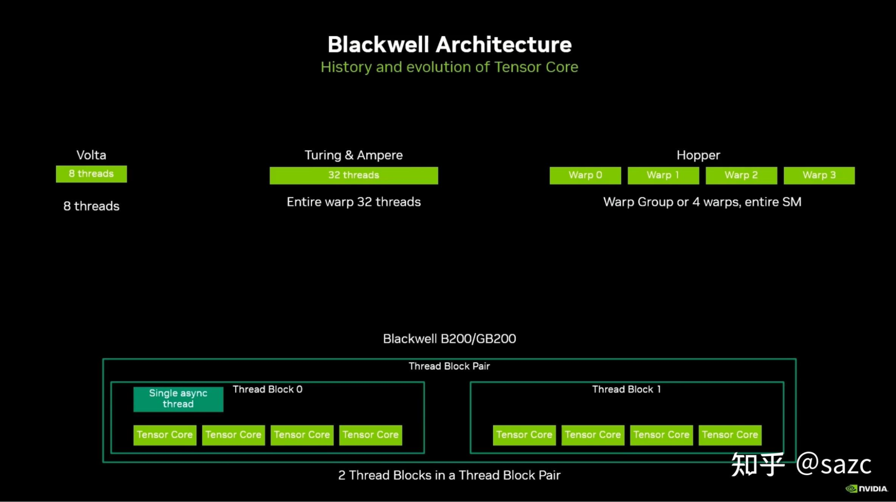
跨 2 SM 当作一个 MMA 单位。" loading="lazy" style="display:block;width:100%;height:auto;background:#fff;border:1px solid #d0d7de;border-radius:6px"/>tcgen05.mma 回到单线程发射，但完成仍是异步事件。tcgen05 各指令的 issue granularity：mma/cp/shift/commit 在 cta_group::1 下可由单线程发起，ld/st 则仍按 warp 访问 TMEM 的 1/4。官方参考：PTX ISA · Issue Granularity；CUDA Programming Guide · Asynchronous Operations；CUTLASS · Blackwell SM100 GEMMs。
这里先把“粒度”当成坐标系：Grid 负责启动，Cluster 负责跨 SM 协作，CTA 绑定一个 SM，Warpgroup / Warp / Thread 决定谁能发射具体硬件指令。读 Blackwell 时最重要的是两级：Cluster 让 2-CTA UMMA 成立；Thread 让 tcgen05.mma 可以单线程异步发射。
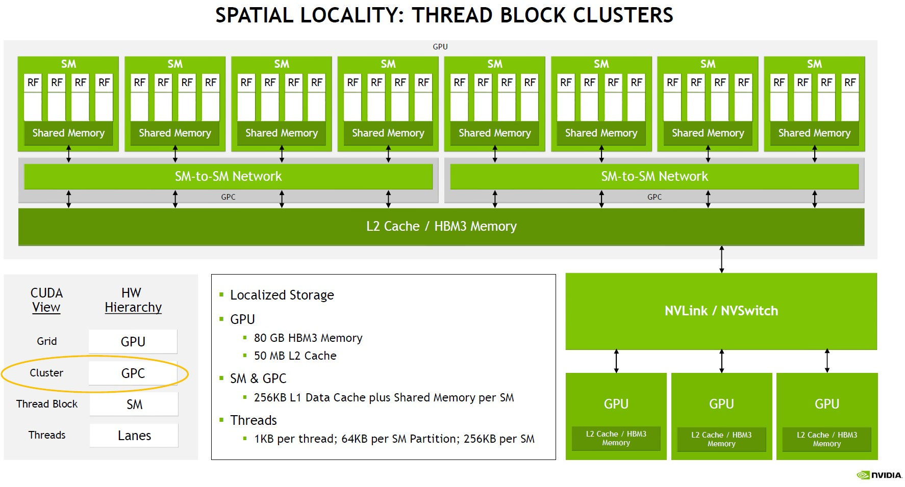
Blackwell 在 RF 旁新增了一块叫 TMEM 的 SRAM，仅供 Tensor Core 访问 ，SIMT 不可触。它是后面所有“异步 MMA / 单线程发射 / 全 warp 都是 producer & consumer”的硬件根源。
每代 MMA 指令做了两件事：把累加器位置 往外搬（RF → TMEM），把同步语义 往异步推（同步 → fence/commit/wait → mbarrier 自动 arrive）。NVIDIA 官方对照表：
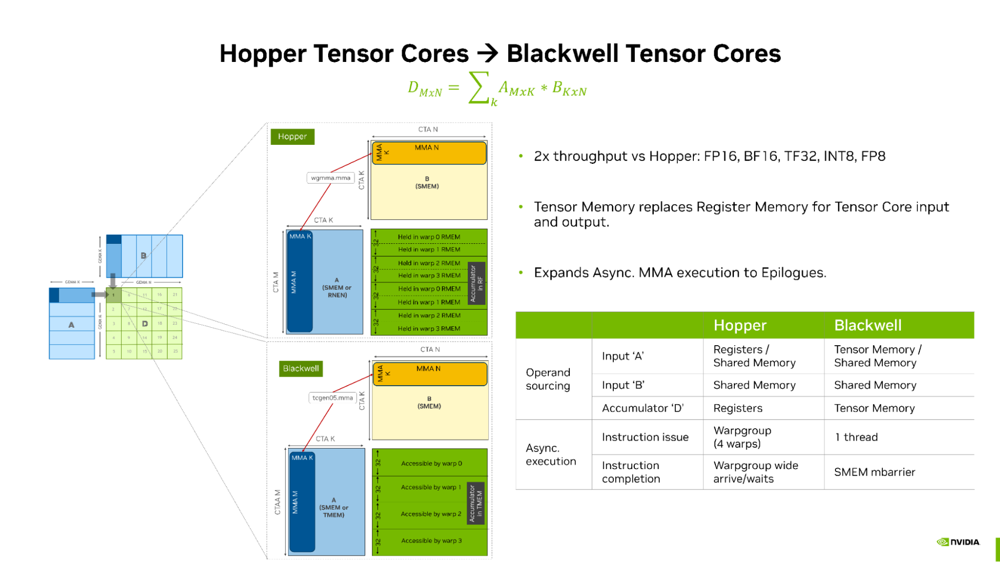
1 thread ，completion 从 warpgroup arrive/wait 变 SMEM mbarrier。" loading="lazy" style="display:block;width:100%;height:auto;background:#fff;border:1px solid #d0d7de;border-radius:6px"/>| 符号 | 含义 | 典型值 |
|---|---|---|
| SM | Streaming Multiprocessor，GPU 计算核心 | B200 = 148 个 |
| GPC | GPU Processing Cluster，一组紧密相连的 SM，cluster 必须在 GPC 内 | B200 = 8 个 GPC |
| Die / NV-HBI | Blackwell 的 2 个 die 用 NV-HBI 互联，软件透明 | NV-HBI 10 TB/s |
| CTA | Cooperative Thread Array = 一个 thread block | 1 CTA = 1 SM |
| Warpgroup | 4 个 warp = 128 thread，wgmma 发射粒度 | Hopper |
| Warp | 32 thread，tcgen05.cp / ld / st 发射粒度 | Blackwell |
| RF | Register File，每 SM 256 KB | 线程私有 |
| SMEM | Shared Memory，每 SM 与 L1 共享 228 KB | CTA 内共享 |
| TMEM | Tensor Memory，Blackwell 新增的 256 KB Tensor Core 专用 SRAM | 仅 5th-gen TC 可访问 |
| L2 | L2 Cache，跨 SM 共享。Hopper 分 2 partition，Blackwell 单体 65 MB | B200 = 65 MB |
| HBM3e / GDDR7 | 全局内存。B200 192 GB HBM3e；RTX 5080 16 GB GDDR7 | ~ 8 TB/s |
| TMA | Tensor Memory Accelerator (Hopper)，单线程发起的 GMEM↔SMEM DMA 引擎 | 带 mbarrier |
| mbarrier | 硬件 memory barrier，三个字段：arrival count / tx-count / phase bit | 所有异步引擎共用 |
| UMMA | Unified MMA = Blackwell 的 tcgen05.mma；可单 CTA 或 2-CTA cooperative | 1cta / 2cta |
| CTA Pair | 2 个相邻 CTA (CTA ID 仅差 bit 0) 联合发射 2-CTA UMMA | 共享 B 操作数 |
| FP4 / FP6 / FP8 | 低精度浮点。E2M1 / E2M3·E3M2 / E4M3·E5M2 | Blackwell 5th-gen TC |
| MX / NVFP4 | microscaling 格式：MX block-32 + UE8M0；NVFP4 block-16 + UE4M3 | 硬件 dequant |
| CuTe / CUTLASS | NVIDIA tile-based kernel DSL（C++ 模板 + Python DSL） | Blackwell 主流编程方式 |
要理解 Blackwell 为什么要“颠覆性”地重设编程范式，必须先看清 Hopper 这一代是怎么把流水做到极致的——以及在那之上还有哪些软件代价无法消除 。
mma.sync.m8n8k4 指令完成 16×16 块 fma，密度提高 8× 。但仍是 thread-level 同步指令。load → sync → mma → load → sync → mma。Ampere 加了一件关键事：异步加载 。cp.async 让 GMEM→SMEM 不再阻塞计算线程，配合 multi-stage 软件流水，访存与 Tensor Core 计算可以重叠。NVIDIA 在 AI Open Day 上的总览图直接展示了这一切：
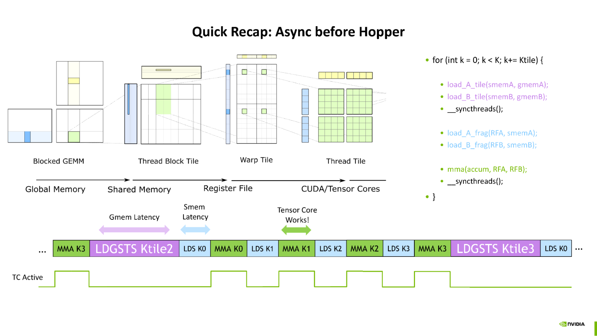
TC Active 信号几乎不再 idle。" loading="lazy" style="display:block;width:100%;height:auto;background:#fff;border:1px solid #d0d7de;border-radius:6px"/>Ampere multi-stage 解决了"访存挡住计算"的问题，但还没解决tile 边界的 prolog / epilog 。在传统 Block-per-tile 模型下，每个 block 都要走一次 "prolog→compute→epilog"，prolog/epilog 时段 Tensor Core 完全闲置。当 Tensor Core 越来越快，这部分占比越来越大。
Hopper 的解法是 Persistent Kernel ：把 grid size 钉死等于 SM 数，每个 CTA 长期占据一个 SM ，依次处理多个 output tile。prolog 在 kernel 启动时只做一次 ，epilog 也只做一次。tile 之间的边界变成"数据切换"而不是"block 切换"。
但仅 Persistent 还不够——单个 CTA 内部还要把 TMA producer 和 wgmma consumer 错开。Hopper 由此推出 Warp Specialization ：把一个 warpgroup 专门做 TMA 加载，另两个 warpgroup 交替做 wgmma 计算（"ping-pong"），中间用 mbarrier 协调。NVIDIA 官方时间线最直观：
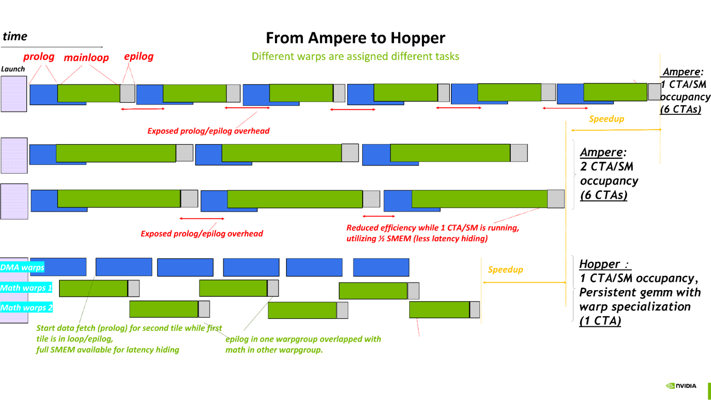
一个 warpgroup 的 epilogue 与另一个 warpgroup 的 math 重叠 ，prolog/epilog 完全不再暴露。" loading="lazy" style="display:block;width:100%;height:auto;background:#fff;border:1px solid #d0d7de;border-radius:6px"/>支撑这套异步流水的关键原语是 mbarrier ——一个硬件信号量，把“等待”和“通知”压缩成一条原子操作。它有三个状态字段。Hopper warp-specialized GEMM 的官方流程图最能说明 producer-consumer 是怎么靠 mbarrier 协作的：
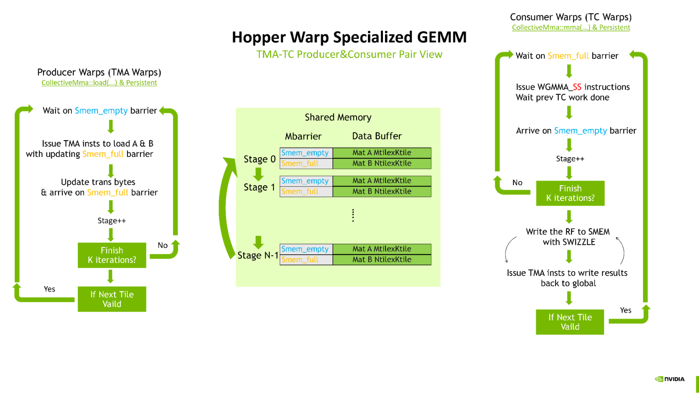
把 mbarrier 落到代码层面，NVIDIA 给出 TMA Warp 与 TC WarpGroup 两侧对称的实际编程范式 ：
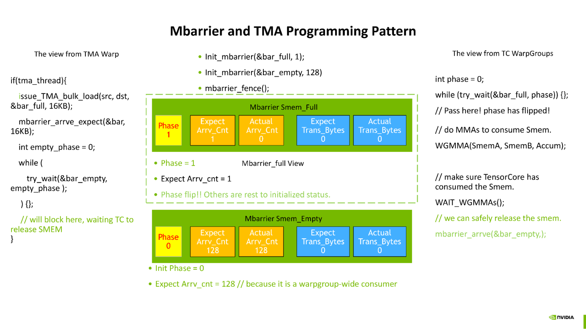
左侧 TMA Warp 视角 ：init_mbarrier(&bar_full,1) + init_mbarrier(&bar_empty,128)，循环里 issue_TMA_bulk_load + mbarrier_arrive_expect_tx(bar_full,16KB) + while wait empty_phase。右侧 TC WarpGroups 视角 ：mbarrier_fence + while try_wait(bar_full,phase) loop，phase flip 后 do MMAs（WGMMA）+ wait_WGMMAs + mbarrier_arrive(bar_empty)。中间 Mbarrier_full 和 Mbarrier_Empty 各自的 phase / Expect_Arrv_Cnt / Actual_Arrv_Cnt / Expect_Trans_Bytes / Actual_Trans_Bytes 五个字段实时更新。" loading="lazy" style="display:block;width:100%;height:auto;background:#fff;border:1px solid #d0d7de;border-radius:6px"/>这张图最有教育意义的细节：bar_full 的 Expect_Arrv_Cnt = 1（仅 TMA 一个 thread arrive），bar_empty 的 Expect_Arrv_Cnt = 128（整个 warpgroup-wide consumer 都要 arrive 才能算 SMEM 用完）。这就是为什么 init_mbarrier 时两边的 arrival count 完全不对称——arrival count 永远等于"要等几条腿到齐" ，与生产/消费的角色无关。
普通信号量需要 producer 主动 arrive()。但 TMA 的“传完了”事件是由硬件 DMA 引擎 发出的，不是软件能 hook 的。tx-count 字段让硬件可以在 cp.async.bulk 完成时自动累加字节数 ，软件只需声明"我期望 16 KB"，剩下完全靠 DMA fabric 自己跑完。同理 Blackwell tcgen05.mma 完成时 umma_arrive 也是硬件原子 地把 mma 完成 + SMEM 释放 + TMEM 写入这三件事串成一条 arrive。
有了 mbarrier 还不够。Hopper WGMMA 是异步指令 ，要靠 wgmma.wait_group 跟踪完成。如果只发射单个 WGMMA，TC 完成后 warp scheduler 还要等 SMEM 准备好下一个 tile——TC 在等待间会 idle：
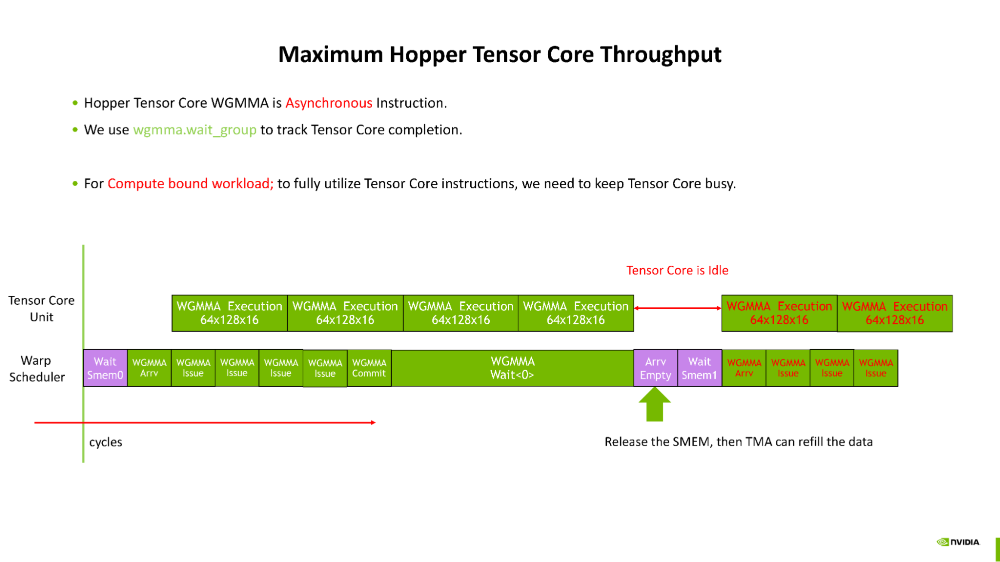
右侧出现一段 Tensor Core idle ——warp scheduler 在等 SMEM 释放并被 TMA 重新填充。Compute-bound workload 的目标是把 idle 砍光。" loading="lazy" style="display:block;width:100%;height:auto;background:#fff;border:1px solid #d0d7de;border-radius:6px"/>解法是 multi-stage WGMMA ：同时发射多组 WGMMA，让其中一组在算的时候另一组在准备：
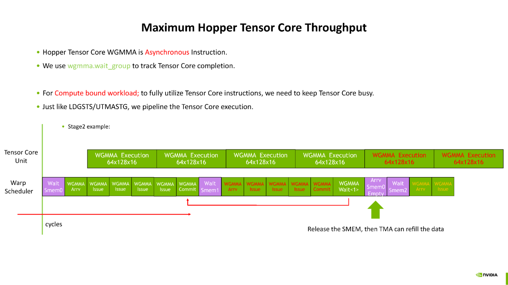
WGMMA 完成后立即开始下一条 。“Just like LDGSTS/UTMASTG, we pipeline the Tensor Core execution.”" loading="lazy" style="display:block;width:100%;height:auto;background:#fff;border:1px solid #d0d7de;border-radius:6px"/>把 Persistent + Warp Specialization + mbarrier + multi-stage WGMMA 全部组合起来，就是 DeepGEMM / FA3 这一类 SOTA Hopper kernel 的“PingPong 调度”。NVIDIA 官方时间线和 warp 角色图：
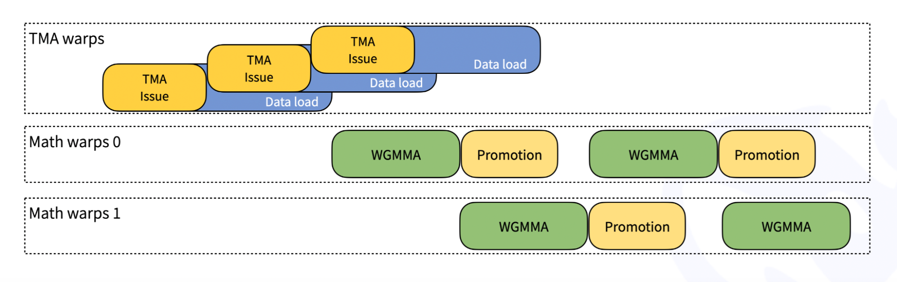
始终至少有一个 warpgroup 在跑 Tensor Core 。" loading="lazy" style="display:block;width:100%;height:auto;background:#fff;border:1px solid #d0d7de;border-radius:6px"/>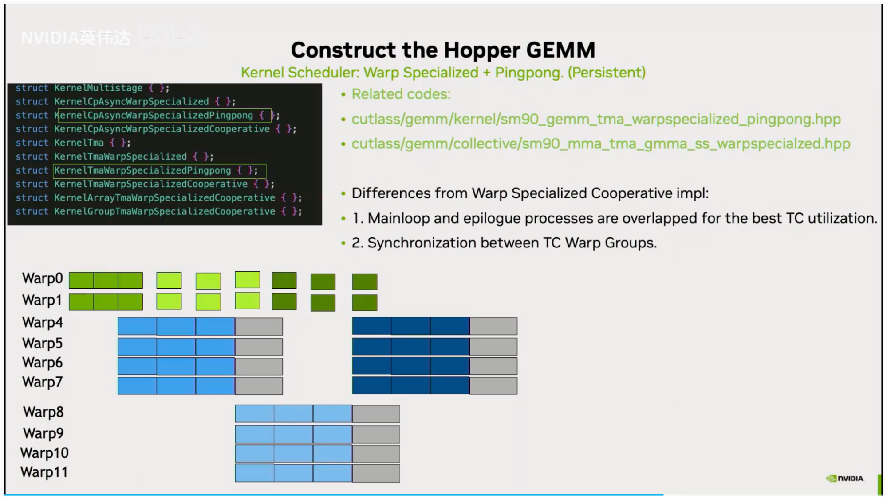
Hopper 已经把 GPU 流水推到非常极致。但有三个根本限制 它没动——这三件事正是 Blackwell 要拆掉的：
| 限制 | 原因 | 付出的代价 |
|---|---|---|
| 累加器在 RF 里 | wgmma 必须 warpgroup 同步发射，结果只能写到 thread-private RF | 占 64–256 reg/thread，限制 occupancy |
| warpgroup 不能切角色 | 累加器在 RF 里，必须由同 warpgroup 持有到 epilogue 完成 | 无法在 MMA 进行时让别的 warp 灵活做后处理 |
| fence / commit / wait 三段式 | wgmma 不直接接 mbarrier，要软件管理 commit_group | PTX 难写、容易踩坑 |
Blackwell 的 motto：把这三件事拆成硬件原语 。
NVIDIA 在 GTC 2025 上把 Blackwell 的硬件新增点压成 3 条：
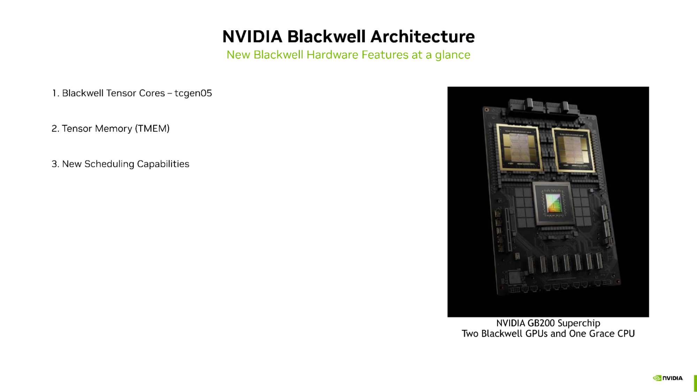
本层以下三节就是按这条主线展开。
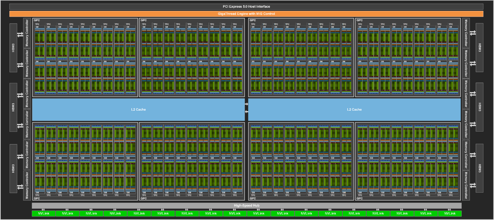
AMD MI300 的 chiplet 拓扑对软件可见——不同 die 上的 SM 通信延迟不同，需要程序显式调度。NVIDIA 的判断是：编程模型的稳定性比“暴露硬件”换来的微小性能提升更重要 。所以 NV-HBI 的设计目标是“对软件零感知”——跨 die 的 cluster mbarrier 与同 die 看起来一样，仅在 L2 partition 编排上做了内部优化。这是 Blackwell 整套软件栈（CUTLASS / CuTe / TMA）几乎不变就能用的根本原因。
上面 deep-dive 框说 NV-HBI “对软件零感知”，但硬件层面是怎么做到“零感知”的 没展开。本节按硬件 → 一致性协议 → 性能特征三层拆开。
第一层 · 参与的硬件组件
| 组件 | 角色 | 是 Blackwell 新增吗 |
|---|---|---|
| NV-HBI fabric | 双向 10 TB/s 高速互联，物理位于两 die 之间的 silicon bridge | ✅ 新增（Blackwell 首发） |
| L2 partition coherence engine | Die 0 的 L2 与 Die 1 的 L2 之间维护 cache line 一致性 | ✅ 新增（per-die L2 已有，跨 die 一致性是新的） |
| Cluster network | 跨 die 的 SM-to-SM cluster 通信（distributed SMEM、cluster mbarrier） | Hopper cluster network 的扩展版本 |
| Unified address translator | 把统一 GPU 视图的 virtual address 路由到正确的 die / GPC / SM | 新增 |
| HBM3e fabric | 4 个 HBM3e stack 分布在两 die 上，通过 NV-HBI 实现统一寻址 | HBM 已有；统一寻址是 Blackwell 新增 |
关键新增：L2 coherence engine + Unified address translator ——前者让两 die L2 表现得像一块大 cache，后者让上层软件看到的是连续 192 GB HBM 而非 2×96 GB。
第二层 · 跨 die 一致性协议（推断版本，NVIDIA 未完全公开）
类比 CPU 多 socket 服务器的 NUMA + cache coherence。NV-HBI 大致走类似 MOESI 风格协议，但针对 GPU 的 throughput 工作负载做了简化：
第三层 · 跨 die 与同 die 的实际性能差距
| 访问类型 | 同 die 延迟 | 跨 die 延迟（推断） | 差距 |
|---|---|---|---|
| L2 hit | ~273 cyc | ~310 cyc | +14%（穿过 NV-HBI ~37 cyc 额外） |
| HBM read | ~658 cyc | ~700 cyc | +6%（HBM 路由本身就慢，NV-HBI 占比小） |
| 跨 SM atomic | ~50 cyc | ~80 cyc | +60% |
| cluster mbarrier arrive | ~10 cyc | ~25 cyc | +150% 但绝对值仍小 |
| L2 带宽 | ~8 TB/s 同 die | NV-HBI 10 TB/s 共享上限 | 双 die 总计 ~16 TB/s 但跨 die 共享 NV-HBI |
第四层 · 与 §6.1.1 / §3.6 / §7.2.1 一致的设计哲学
| 硬件机制 | 透明给软件的“假象” | 背后真正发生的事 |
|---|---|---|
| NV-HBI | 单一 GPU、连续 192 GB | 双 die + L2 coherence + 跨 die snoop |
| TC retire (§3.6) | tcgen05.commit 后 mbar 自动翻转 | TC tracker → wired → mbar engine |
| CLC (§6.1.1) | fetch_next_work() 拿到 tile id | CLC engine atomic + cluster broadcast |
| DE (§7.2.1) | cp.async with.decompress 透明解压 | HBM → DE → SMEM injector，绕过 SM/L2 |
四件事的共同点：硬件承担复杂度，软件接口保持简洁 。这是 Blackwell 区别于“暴露硬件”架构（如部分 chiplet 设计）的根本设计哲学。
单个 SM 内部有三个值得讲的变化：
Jarmusch 等论文用 PTX fma（FP32）与 mad（INT32）混合 dependency-chain microbenchmark 测得（论文 Table III）：
| 指令模式 | GH100 真延迟 / 完成延迟 (cyc) | GB203 真延迟 / 完成延迟 (cyc) | 读法 |
|---|---|---|---|
| Pure INT32 | 4 / 16.69 | 4 / 16.97 | 独立流水时基本持平 |
| Pure FP32 | 4 / 7.86 | 4 / 7.97 | 独立流水时基本持平 |
| Mixed INT/FP set 1 | 31.62 / 16 | 15.96 / 14 | 统一单元让真延迟砍半 |
| Mixed INT/FP set 2 | 43.54 / 20 | 26.28 / 18 | 差距随依赖链长度放大 |
| Pure FP64 (1024 dep instr) | 8.04 / 13 | 63.57 / 11 | 消费级 GB203 仅 2 FP64 unit / SM |
| 项 | GH100 (Hopper) | GB203 (Blackwell) | 变化 |
|---|---|---|---|
| INT32/FP32 unit | 分立 | unified (二选一发射) | 混合 workload 利用率↑ |
| FP64 / SM | 64 | 2 (消费级) / 满配 (B200) | 消费级砍 FP64 给低精度 |
| L1+SMEM / SM | 256 KB | 228 KB | SMEM 微缩，让位 TMEM |
| Register File | 256 KB | 256 KB | 不变 |
| TMEM (新) | — | 256 KB | 本节重点 |
| Tensor Core gen | 4th | 5th | FP4/FP6 + block-scale |
第五代 Tensor Core 支持的数据类型完整列表（NVIDIA Brief Table 1）：
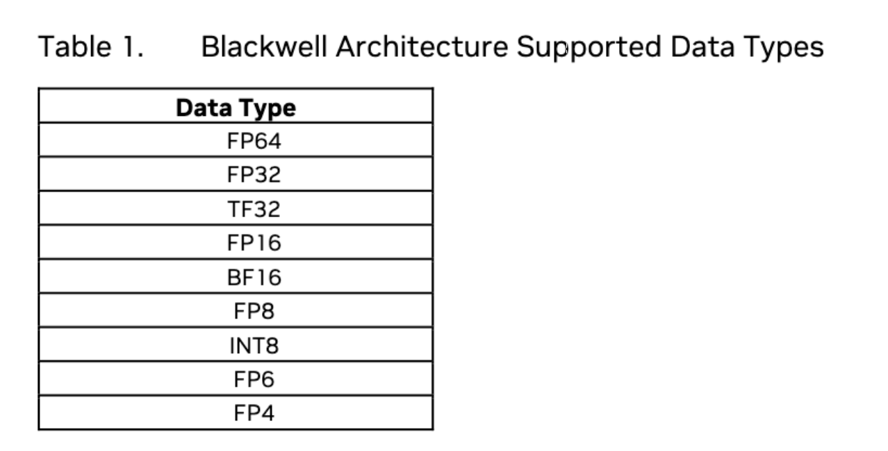
FP6 / FP4 。FP4 (E2M1) + 硬件 block-scaling 是 LLM 推理的关键。" loading="lazy" style="display:block;width:100%;height:auto;background:#fff;border:1px solid #d0d7de;border-radius:6px"/>这是整个 Blackwell 设计的支点 。理解 TMEM 等于理解后面所有 tcgen05 / 单线程 MMA / 全 warp 异步的 motivation。NVIDIA 官方一图：
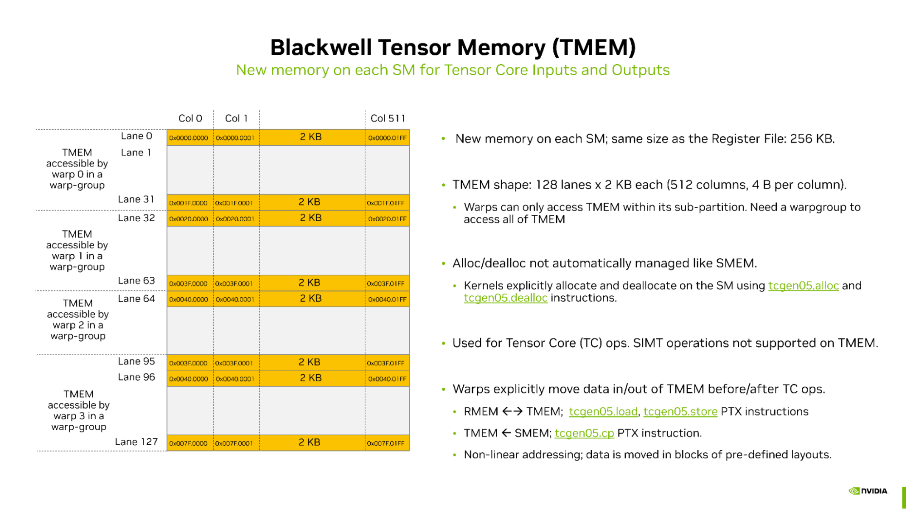
红色高亮 表明 warp 0/1/2/3 各自只能访问 lane 0–31 / 32–63 / 64–95 / 96–127——遍历整个 TMEM 必须一个 warpgroup 协作。" loading="lazy" style="display:block;width:100%;height:auto;background:#fff;border:1px solid #d0d7de;border-radius:6px"/>地址方案非常简单粗暴。NVIDIA 给出 PTX 级编码图：
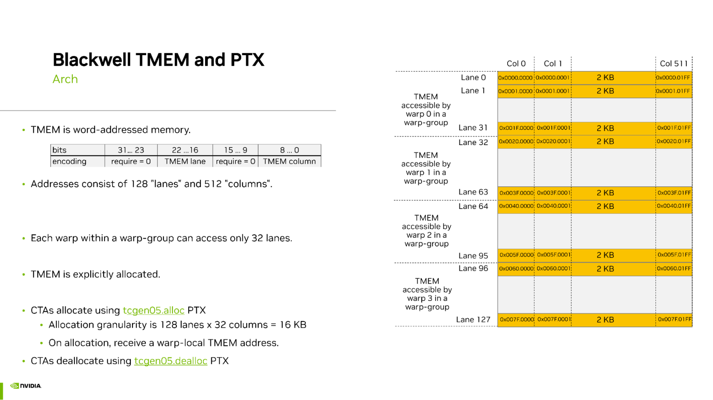
TMEM 物理上分成 4 个 sub-partition，每个 32 lanes × 512 cols。一个 warp 只能访问属于自己 sub-partition 的 32 lanes 。这意味着：
tcgen05.ld，就只能拿到 1/4 的累加器。论文实测 TMEM 提供 16 TB/s 读 + 8 TB/s 写。关键是这不和 SMEM 带宽竞争 ——TMEM 走独立的总线连到 Tensor Core，与 SMEM→Tensor Core 通路并行。所以一个典型 mma 可以同时：
三条总线同时跑，等效带宽是 SMEM-only 路径的 ~2.1×。这就是论文报道"FP8 实测 3851 TFLOPS @ 96.3% 峰值"的物理基础——没有 TMEM 这块带宽，5th-gen Tensor Core 算力提了也只能闲着 。
Layer 2 涉及的硬件变化在 NVIDIA 官方"From Hopper To Blackwell"一图中能直接看到：
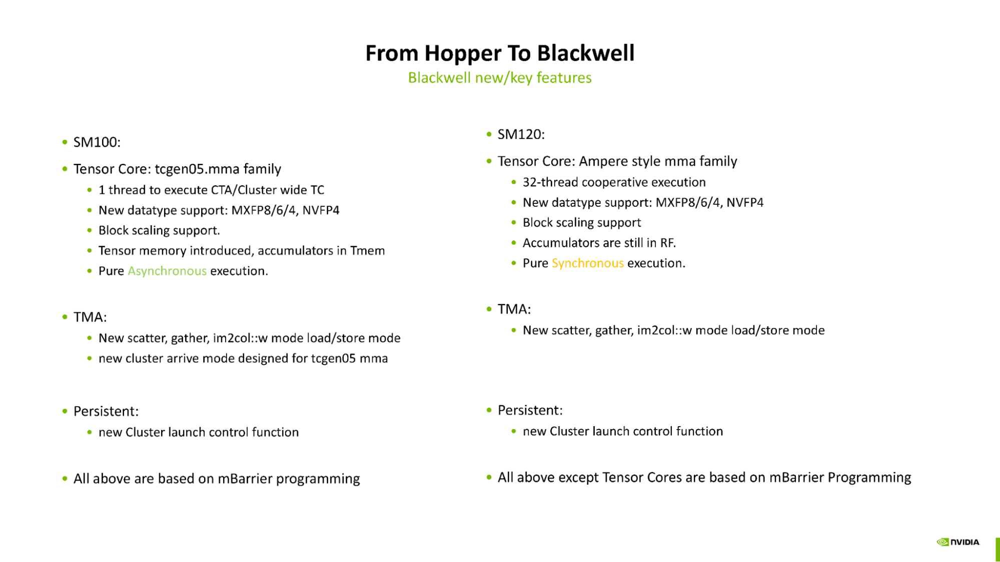
SM100（Data Center, B200） ：tcgen05.mma 1 thread/CTA/Cluster wide；新 dtype MXFP8/6/4, NVFP4；block scaling supported；TMEM accumulators；纯异步执行。SM120（Consumer, RTX 5080） ：Ampere style mma family；32-thread cooperative；累加器仍在 RF；纯同步执行；新 TMA scatter/gather/im2col-w；Persistent Cluster Launch。注意消费级 SM120 的 Tensor Core 仍走 Ampere 路径——本文 Layer 2-11 描述的 tcgen05/TMEM/CTA Pair 全部仅在 SM100 (B200) 可用。" loading="lazy" style="display:block;width:100%;height:auto;background:#fff;border:1px solid #d0d7de;border-radius:6px"/>有了 TMEM，就需要一套指令让软件能"申请、加载、计算、读出、释放"。NVIDIA 把这套指令整体放在新的前缀 tcgen05.* 下。它们彼此正交，组合起来覆盖 TMEM 的全生命周期。
| 指令 | 方向 | 谁能发射 | 关键约束 |
|---|---|---|---|
tcgen05.alloc | — | 单 warp | 列为单位、power-of-2、最少 32 列；base addr 写入 SMEM |
tcgen05.dealloc | — | 同 alloc 的 warp | 必须由原 warp 释放 |
tcgen05.cp | SMEM → TMEM | 单 warp | 按 32×128b 块异步；可带 multicast (warpx4) |
tcgen05.mma | SMEM/TMEM → TMEM | 单线程 | 异步；自动 arrive 一个 mbarrier |
tcgen05.mma.cta_group::2 | 跨 2 SM | leader CTA 单线程 | 2-CTA UMMA，详见 Layer 5 |
tcgen05.ld | TMEM → RF | 单 warp | warp-sync；只能访问该 warp 的 32 lanes |
tcgen05.st | RF → TMEM | 单 warp | 同上限制 |
tcgen05.commit | 同步 | 单线程 | arrive mbarrier，标"截至此刻所有 mma 完成" |
表中最不起眼但最关键的是 tcgen05.mma 的"单线程发射"。听起来像微优化，实际上是整个 Blackwell 编程模型重塑的支点 。
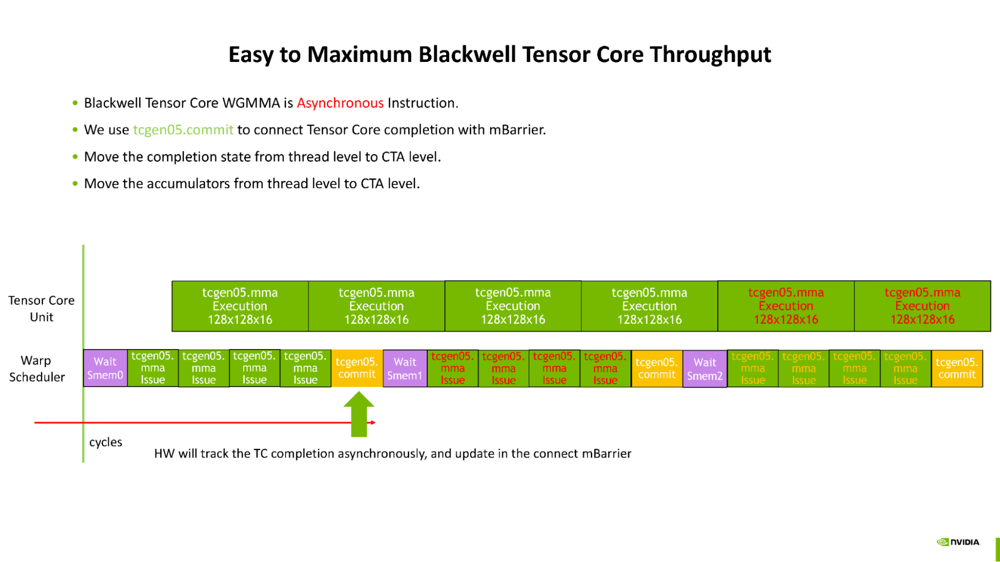
HW will track the TC completion asynchronously, and update in the connect mBarrier. ——这就是“Tensor Core 像 TMA 一样异步”的官方表述。" loading="lazy" style="display:block;width:100%;height:auto;background:#fff;border:1px solid #d0d7de;border-radius:6px"/>Hopper wgmma m64nNk16 的实测延迟与 N 强相关：N=64/128/256 分别是 32/64/128 cyc——典型时序流水（temporal pipelining） 特征：tile 越宽、串行 cycle 越多。Blackwell tcgen05.mma m{64,128,256}n{64,128,256}k16 测得延迟全在 11.0–11.4 cyc 之间，与 tile 宽度几乎解耦 。论文据此推断 Blackwell 5th-gen Tensor Core 是spatial array 设计 而非 temporal pipelining——硬件把 tile 在空间上完全展开，所以更宽的 tile 不付出时间代价。这意味着 Blackwell 上选择更大的 MMA tile 是“白吃午餐”。
for (k=0; kfor (k=0; k另一个 warpgroup 读 TMEM
注意右侧没有 fence + commit_group + wait_group——整套异步语义压缩成一条 umma_arrive 。这是 mbarrier 抽象成功的地方：所有异步引擎（TMA / tcgen05.cp / tcgen05.mma）都接同一种通知机制，软件只学一种同步语言。
tcgen05.mma + umma_arrive，同步代码量减少 3 倍且不易写错。PTX 是软件接口；硬件实际执行的是 SASS。tcgen05.mma 在不同 operand precision 下被 ptxas 翻成不同的 SASS 指令 。Jarmusch 等用 cuobjdump 实测得到的映射（论文 Table IV）：
| Precision | Hopper wgmma SASS | Blackwell tcgen05.mma SASS | 说明 |
|---|---|---|---|
| FP64 | DMMA | DMMA | 同名，但 spatial array 翻倍 |
| FP32 / TF32 | HGMMA | HMMA | 从 group-MMA 退到 warp-MMA |
| FP16 / BF16 | HGMMA | HMMA | 同上 |
| FP8 (E4M3 / E5M2) | QGMMA | QMMA | 同上 |
| FP4 (E2M1) | — | OMMA (octal-byte MMA) | Blackwell 全新 SASS |
| FP6 (E2M3 / E3M2) | — | QMMA | 意外用 QMMA 而非 OMMA（current ptxas 的回退路径） |
| INT4 / INT8 | IGMMA | IMMA | 整数 MMA |
注意 G 后缀（HGMMA/QGMMA/IGMMA）= "group MMA"——Hopper warp-group 同步指令。Blackwell 把 G 拿掉变成 HMMA/QMMA/IMMA = warp-level，正好对应"单线程发射、warp-scope 完成"。
wgmma 在 SM100 上已弃用，必须用 tcgen05.mma。但旧 kernel 移植时 wgmma 仍能编译过 ——只是走 Ampere/Hopper 兼容路径，完全不调 5th-gen Tensor Core spatial array 。结果：实测 throughput 与 H100 几乎一致（< 5% 提升）、不能用 FP4/FP6、不能用 block-scaling、不能用 2-CTA UMMA。
cuobjdump --dump-sass 后 grep——出现 HGMMA / QGMMA / IGMMA 是老 Hopper 路径；出现 HMMA / QMMA / OMMA / IMMA 才是真正 5th-gen Blackwell。SM100_MMA_* 而非 SM90_MMA_*。tcgen05，没有就是 kernel 没真正升级到 Blackwell。这是 Blackwell 5th-gen Tensor Core spatial array 设计 最直接的证据——延迟不随 N 增加 。论文 Table V 把同精度（FP16 输入 + FP16 累加）的不同 tile shape 摆一起对比：
| 指令 | Tile Shape | Scope | SI-LAT (cyc) | 结论 |
|---|---|---|---|---|
wgmma | m64n64k16 | warp-group | 32.0 | Hopper：与 N 线性增长 典型 temporal pipelining |
wgmma | m64n128k16 | warp-group | 64.0 | |
wgmma | m64n256k16 | warp-group | 128.0 | |
tcgen05.mma | m64n64k16 | warp | 11.0 | Blackwell：N×4 但延迟几乎不变 spatial array 一拍出结果 |
tcgen05.mma | m128n128k16 | warp | 11.3 | |
tcgen05.mma | m256n256k16 | warp | 11.4 |
Hopper 上选大 tile 等于“用更多 cycle 换更高 throughput”——是权衡 。Blackwell 上选大 tile 不付出延迟代价 ——也就是说“选最大 tile”几乎是无脑最优解。这把 kernel auto-tuning 空间砍掉一大半。
本节回答“一条 tcgen05.mma 单线程发射后，硬件是怎么知道它完成、又怎么通知 mbarrier”——这是 §1.3 中 mbarrier 状态机抽象在 Blackwell Tensor Core 这一具体异步引擎上的落地。
第一层 · 参与的硬件组件
| 组件 | 角色 | 关键变化 |
|---|---|---|
| 5th-gen Tensor Core | spatial array MAC 矩阵；执行单条 tcgen05.mma 完成 2D MAC | Blackwell 升级，spatial 而非 temporal pipelining |
| TC completion tracker | per-SM 硬件状态机，跟踪未完成的 mma 队列；mma 完成时触发 retire signal | ✅ Blackwell 新增（Hopper wgmma 是软件 commit_group 跟踪） |
| TMEM write port | 把 spatial array 算出的累加器写入 TMEM 的 128 lane × N col 块 | 新增专用 write 路径，不走 LSU |
| mbarrier engine | SMEM 中的 mbarrier 状态由硬件 atomic 更新 | Hopper 已有；新增 TC retire signal → mbar 的 wired 路径 |
| SMEM bank | 承载 mbarrier 状态字段（arrive cnt / tx-cnt / phase） | 已有 |
关键新增：TC completion tracker + TC retire → mbar wired 路径 。这两件事让 Tensor Core 的完成事件不再需要软件 commit/wait，而是由硬件 atomically 通知 mbar。
第二层 · 单条 tcgen05.mma 的硬件路径（10 步）
第三层 · 两种 retire 模式
tcgen05.mma 支持两种 retire 通知方式，对应不同 mbar 用法：
| 模式 | PTX 语法 | 语义 | 典型用法 |
|---|---|---|---|
| 单 mma 直接 arrive mbar | tcgen05.mma ... [mbar];(指令直接带 mbar) | 这条 mma 完成后单独 +1 mbar | 不常用，开销过大 |
| commit-group 模式 | 多条 tcgen05.mma ... ;+ tcgen05.commit [mbar]; | 一次 commit 把截至此刻发射的所有 mma 打包成一个 retire 事件 → +1 mbar | 常用 ，DeepGEMM/CUTLASS 默认 |
commit-group 模式的优势：mainloop 里发射 N 条 mma 算一个 K-tile 的所有 sub-mma，最后一条 commit 通知 mbar；mbar 的 expected_cnt = 1（不是 N）。消费者只需 wait 1 次 ，无关 mma 个数。这就是 §3.3 mainloop 伪码里 umma_arrive(mma_mbar) 在循环外的原因。
第四层 · 与 Hopper wgmma 的硬件路径对比
第五层 · 跨 CTA 的 retire 多播（2-CTA UMMA 时）
当用 tcgen05.mma.cta_group::2 时，retire 事件需要通知两个 CTA ——leader 和 peer 都要知道 mma 完成。硬件路径：
// Leader CTA 发射
tcgen05.mma.cta_group::2 [d_tmem], a_desc, b_desc, idesc;
// 由 leader 单线程发射，peer CTA 不参与发射但其 TMEM 也被写
// Leader CTA 的 commit (multicast 到两个 mbar)
umma_arrive_multicast_2x1SM(mma_mbar, mcast_mask);
// 展开 PTX:
// tcgen05.commit.cta_group::2.mbarrier::arrive
// .multicast::cluster::all.b64 [mbar];
// 行为: TC tracker 检测到 cta_group::2 标志,
// atomic 触发两个 CTA SMEM 中 mbar 的 phase 翻转
关键 trick：peer CTA 的 mbar 地址 = leader CTA mbar 地址清掉 bit 24（因为 cluster 内 CTA pair 的 SMEM 地址只差 bit 24）。硬件 multicast unit 利用这点把一个 atomic update 拆成两个 atomic update 同时发到两个 SMEM bank。
把它和 §6.1.1 的 CLC 对比：CLC 让 work distribution 异步（CTA 不等 atomic counter），TC retire 让 mma 完成异步（warp 不等 wgmma.wait_group） 。两者本质都是“把曾经吃 SM cycle 的事 wired 到专用硬件 + mbar 通知”。这就是“全异步”在硬件层面的具体实现：每种异步引擎都有专用 retire 路径直连 mbar engine，软件只需要 wait_barrier 一种同步原语。
tcgen05.commit，TC tracker 不知道何时算“一组结束”。Hopper wgmma 的 commit_group 是“开发者主动声明组的边界”；Blackwell tcgen05.commit 是“主动通知 TC tracker 立即 retire 截至此刻的所有 mma”——语义近似但缺一不可。本节汇总 NVIDIA Developer Forums、CUTLASS GitHub issues、Modular blog、gau-nernst 个人博客等社区资料中出现频率最高的 6 个陷阱——每个都编译过、不报错、运行结果错 ，是真正难调的 bug。写 Blackwell kernel 前过一遍这份清单能省好几天。
if (threadIdx.x == 0) {
tcgen05::alloc(num_cols, &tmem_base);
}
__syncthreads();tcgen05.alloc 是 warp-collective 操作——整 warp 必须共同执行才能完成 atomic 申请并把 base ptr 写入 SMEM。单 thread 调用 = 其它 31 thread 没参与 = 申请挂起或 PTX 报错。// 整 warp 都进入这个分支
if (warp_id == 0) {
tcgen05::alloc(num_cols, &tmem_base);
}
__syncthreads();
// dealloc 也必须由同一个 warp 完成
if (warp_id == 0) tcgen05::dealloc(tmem_base, num_cols);// 想偷懒只用 1 个 warp 做 epilogue
if (warp_id == 0) {
tcgen05::ld<...>(rC, tmem_base);
// 后处理 + store
}// 必须 4-warp warpgroup 协作
auto tiled_t2r = make_tmem_copy(SM100_TMEM_LOAD_32dp32b1x, tmem_acc);
// 4 warp (128 thread) 同时进入
copy(tiled_t2r, tmem_src, rmem_dst);
// CuTe 内部按 warp_id 分配 lane 范围, 一次拿完 128 lane// 想让一个 thread 单独调 cute::gemm
if (threadIdx.x == 0) {
cute::gemm(tiled_mma, tCrA, tCrB, tCtAcc);
}// 三层 elect 嵌套, leader CTA + leader warp + leader thread
if (cta_in_cluster_v == 0
&& cute::elect_one_warp()
&& cute::elect_one_thread()) {
cute::gemm(tiled_mma, tCrA, tCrB, tCtAcc);
}tcgen05.mma [acc], a, b, idesc;
tcgen05.mma [acc], a, b, idesc;
// 期待 mbar 自动 arrive — 错!
wait_barrier(mbar, phase); // 永远死锁tcgen05.commit [mbar] 才会把“截至此刻所有 mma”打包成一次 mbar arrive 事件。漏写 commit = mbar 永远等不到 = consumer warpgroup 死锁。for (int kb = 0; kb < nK; ++kb) {
tcgen05.mma [acc], a(kb), b(kb), idesc;
}
tcgen05.commit [mbar]; // ← 关键! 把 N 条 mma 打包通知 mbar
// consumer:
wait_barrier(mbar, phase); // 此时正常解锁cuobjdump --dump-sass，HGMMA / QGMMA 是老 Hopper 路径，HMMA / QMMA / OMMA 才是真正 5th-gen；(2) 看 atom ：用 SM100_MMA_* 而非 SM90_MMA_*；(3) 看 PTX ：grep tcgen05，没有就是没用上。| 指令 | 粒度 | 调用约定 |
|---|---|---|
| tcgen05.alloc / dealloc | warp | 整 warp 进入 |
| tcgen05.mma | thread | 1 thread 发射, 异步 |
| tcgen05.commit | thread | 1 thread 通知, 异步 |
| tcgen05.cp | warp | 整 warp 协作 SMEM→TMEM |
| tcgen05.ld / st | warp | 整 warp, 每 thread 拿对应 lane |
| tcgen05.mma.cta_group::2 | 2-CTA | leader CTA 1 thread 发射 |
| cluster.barrier | cluster | 全 cluster CTA 同步 |
__syncthreads() 后调用——多余同步浪费 cycle；(2) 把 cp 当作 thread-level 调用——只 1 thread 进入 → 整 warp 死锁（同陷阱 ③）；(3) 把 commit 包在 warp loop 里——重复发射多次 commit 浪费 mbar tx-count。elect_one_thread()；warp-level 用 if (warp_id == X)；CTA-level 用 cute::elect_one_warp()；cluster-level 用 cluster.barrier::arrive。单 SM 的 TMEM 容量 256 KB——已经能装 128×256 的 FP16 累加器（占半个 TMEM）。想让 tile 再大就必须跨 SM 。Blackwell 的解法：2-CTA UMMA ，让两个相邻 CTA 联合发射一条 MMA，操作数沿 M 维拆分，B 通过 multicast 共享。NVIDIA 官方图：
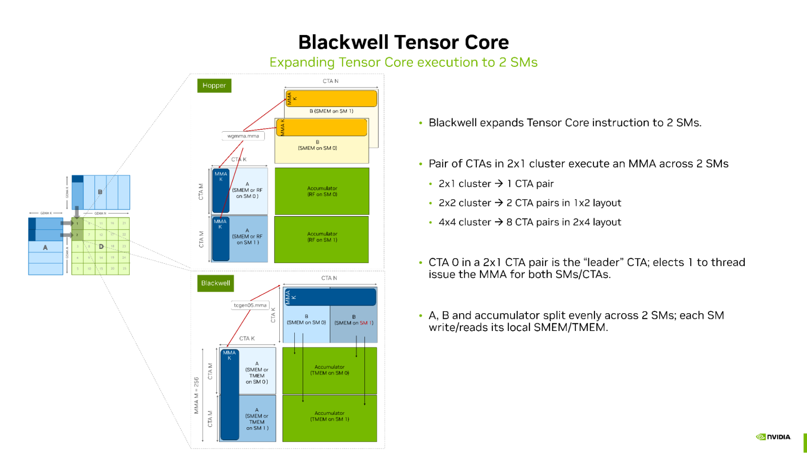
tcgen05.mma.cta_group::2，A 沿 M 切，B 通过 TMA multicast 共享。leader CTA (偶数 ID) 单线程发射。CuTe 用一个 4 维 layout 描述 cluster——其中 V 是peer ID（0 或 1，区分一对 CTA 中谁是哪个）：
// cluster_shape = (4, 4, 1)，pair-UMMA 的 AtomThrID = _2
auto cluster_layout_vmnk = tiled_divide(
make_layout(cluster_shape),
make_tile(typename TiledMMA::AtomThrID{}));
// 得到形如 ((2), 2, 4, 1) 的 4D layout：
// V=2 表示每个 MMA 由 2 个 CTA 协作；
// M=2 表示沿 M 维有 2 个 MMA-pair；
// N=4 表示沿 N 维 4 个；K=1。
auto mma_v = blockIdx.x % size<0>(cluster_layout_vmnk); // peer ID
ThrMMA cta_mma = tiled_mma.get_slice(mma_v); // 按 peer 切片
Tensor tCgA = cta_mma.partition_A(gA); // 仅本 CTA 的那一半
CTA0 和 CTA1 都需要同一份 B。Blackwell 用 16-bit bitmask 编码"哪些 CTA 接收"，TMA 从 GMEM 读一次，硬件 fabric 自动复制到所有目标 SMEM。bitmask 例：
// 4×4 cluster，CTA 0 (peer=0)：A 与同行 CTA 共享，B 与同列共享
tma_bitmask_a = 0x1111; // 同行
tma_bitmask_b = 0x000f; // 同列
copy(tma_A.with(tma_bitmask_a), gA, sA);
copy(tma_B.with(tma_bitmask_b), gB, sB);
2-CTA UMMA只能从偶数 CTA 发射（leader）。但奇数 CTA 也要等 mma 完成 ，否则不知道 SMEM 何时可被覆盖。机制：
cta_group::2 qualifier 发起，arrive 到偶数 CTA 的 mbarrier（通过清掉 mbar 地址 bit 24，找到 peer 的 mbar）。umma_arrive_multicast_2x1SM(mma_mbar, mask) 在偶数 CTA 发射后，把完成事件 multicast 到所有依赖该 tile 的 CTA。leader_mbar_addr ^ (1 << 24)（清掉/翻转 bit 24）。一条 XOR 指令就拿到 peer mbar，0 查表、0 算偏移 。硬件 multicast unit 利用这点把一条 atomic 拆成两条同时发到两个 SMEM bank。umma_arrive_multicast_2x1SM 内部就是这个 XOR；(2) 但一旦你手写 PTX inline asm ，必须知道这个 trick 才能正确填 mbar 地址；(3) 这个 trick仅在 cluster 大小为 2 时成立 ，更大 cluster 需要不同 routing——所以 cta_group::2 是个独立 PTX 修饰符，不是 cta_group::4/8。tcgen05.mma.cta_group::2 会自动 multicast，不解释怎么找 peer 地址。这就是 CuTe 抽象的价值——把这种 hidden hardware quirk 完全包掉 。看起来"扩 TMEM"比"造 cluster fabric"简单得多。但 TMEM 的物理布局（128 lanes × 512 cols）与 5th-gen Tensor Core 的 spatial array 紧密耦合——TMEM 加宽会影响 Tensor Core 的 spatial array 几何，连锁修改面积爆炸。反过来，cluster + mbarrier 在 Hopper 已经准备好 ，只需要把 mma 指令支持 cta_group::2、再让 TMA 支持 cta_group::2 arrive、扩展 mbarrier 的多播 arrive 即可——用现成的基础设施换更大的 tile 。
把 Layer 2-4 的硬件能力放在一起，编程模型自然变了。Hopper 的 warp specialization 是线性二分 ：TMA producer → wgmma consumer。Blackwell 因为 TMEM + 单线程 mma + cluster pair，把流水拆成多段、多生产-多消费 ，每个 warp 同时戴两顶帽子。NVIDIA 官方一图直接对比：
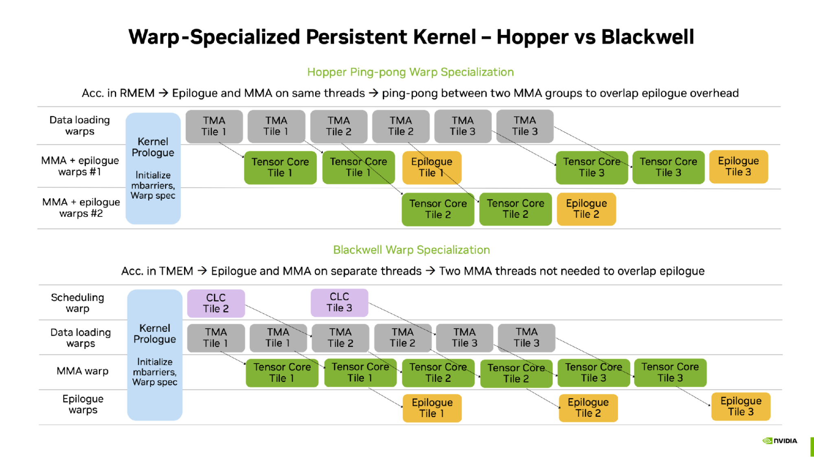
上半 Hopper ：accumulator in RMEM，epilogue 与 MMA 在同 thread ，必须 ping-pong 两个 MMA group 才能 overlap epilogue。下半 Blackwell ：accumulator in TMEM，epilogue 与 MMA 在不同 thread ，不需要 两个 MMA threads 来 overlap epilogue——多了一行 Scheduling warp 派发 CLC（Cluster Launch Control）tile。" loading="lazy" style="display:block;width:100%;height:auto;background:#fff;border:1px solid #d0d7de;border-radius:6px"/>NVIDIA 在 GTC 2025 上给出了 Blackwell Persistent Kernel 的高层视图——这是本文最重要的一张图 ，所有 warp 角色 + 所有 mbarrier 连接都在上面：
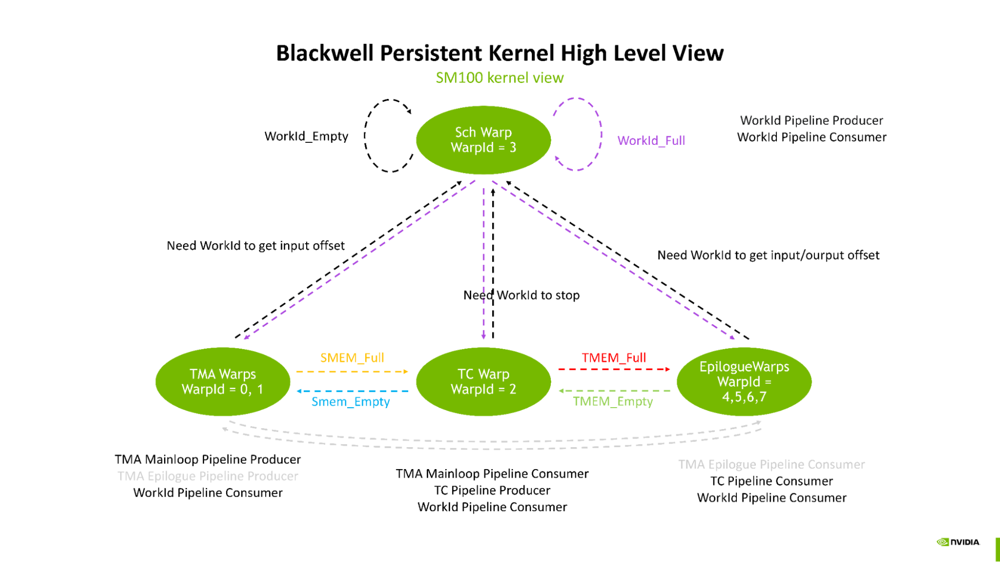
Sch Warp (WarpId=3) 是 WorkId Pipeline Producer + WorldId Pipeline Consumer；左侧 TMA Warps (WarpId=0,1) 是 TMA Mainloop Pipeline Producer + WorldId Pipeline Consumer；中间 TC Warp 是 TMA Mainloop Pipeline Consumer + TC Pipeline Producer + WorldId Pipeline Consumer；右侧 Epilogue Warps (WarpId=4,5,6,7) 是 TC Pipeline Consumer + WorldId Pipeline Consumer。每对 warp 之间都有专门的 mbarrier：Smem_Empty/SMEM_Full（TMA↔TC）、TMEM_Empty/TMEM_Full（TC↔Epilogue）、WorldId_Empty/WorldId_Full（Sch→所有）。" loading="lazy" style="display:block;width:100%;height:auto;background:#fff;border:1px solid #d0d7de;border-radius:6px"/>这张图实证了 Layer 5.1 表格中的所有论点：
| Hopper | Blackwell | |
|---|---|---|
| 累加器位置 | RF (warpgroup 私有) | TMEM (任意 warp 可读) |
| Tensor Core 是 producer 吗 | 否（写到 RF 即终点） | 是（写到 TMEM, Epilogue WG 是 consumer） |
| warp 角色固定吗 | 是（DMA / wgmma 二选一，绑死） | 否（可同时 producer + consumer） |
| 典型 SM 上活跃 warp 数 | ~ 8（2 wgmma WG + 1 TMA WG） | ~ 17（FA4 实测：2 softmax WG + 1 correction WG + dispatcher + TMA + store） |
技术上只需要两个条件：
条件 1 由 TMEM 提供，条件 2 由 tcgen05 + mbarrier 提供。硬件设计与编程模型设计在这里是同一件事 。
每条箭头都是一个独立 mbarrier。例如 FA4 的实现里，一个 SM 上的 mbarrier 大致是：
| mbarrier | Producer | Consumer | 承载事件 |
|---|---|---|---|
tma_q_mbar[stage] | TMA warp | MMA dispatcher | Q tile 已加载 |
tma_kv_mbar[stage] | TMA warp | MMA dispatcher | K, V tile 已加载 |
qkt_mbar[stage] | MMA dispatcher | Softmax WG | S = QKᵀ 写完到 TMEM |
softmax_mbar[stage] | Softmax WG | MMA dispatcher | P = softmax(S) 算完 |
pv_mbar[stage] | MMA dispatcher | Correction WG | O 累加完一个 tile |
store_mbar | Correction WG | Store warp | O tile 最终化 |
一共 ~6 个 mbarrier × 多 stage = 几十个 phase bit 同时跑。没有 mbarrier 这套通用语，这种规模的协作不可能写出来 。
裸写 tcgen05.* PTX 是不现实的——descriptor 编码、TMEM 列分配、mbarrier 计数、swizzle 模式…CUTLASS 用 CuTe DSL 把它分层封装成 MMA Atom ：
// SM100 = Blackwell；F16BF16 = 输入支持 fp16/bf16；SS = A、B 都在 SMEM
using AtomMma = SM100_MMA_F16BF16_SS<
/*MShape*/ _128, /*NShape*/ _256, /*KShape*/ _16,
/*OutputType*/ float,
/*BlkScale*/ NoBlkScale,
/*TwoCTA*/ false>;
TiledMMA tiled_mma = make_tiled_mma(AtomMma{});
ThrMMA cta_mma = tiled_mma.get_slice(_0{});
Tensor tCrA = cta_mma.make_fragment_A(tCsA); // descriptor 而非数据
Tensor tCrB = cta_mma.make_fragment_B(tCsB);
Tensor tCtAcc = cta_mma.make_fragment_C(tCgC); // 直接引用 TMEM
几个关键变化（vs Hopper SM90 atom）：
UMMA::smem_desc——只是 SMEM 描述符，不是数据；UMMA::tmem_frg_1sm——直接指 TMEM；Hopper 引入 thread block cluster 时遗留两个调度上的痛点：(1) cluster shape 必须整除 grid，且要装得下 GPC——大 cluster 经常装不下 ；(2) static tile→SM 映射，遇到 SM 抢占就长尾 。Blackwell 一次性补了这两块。
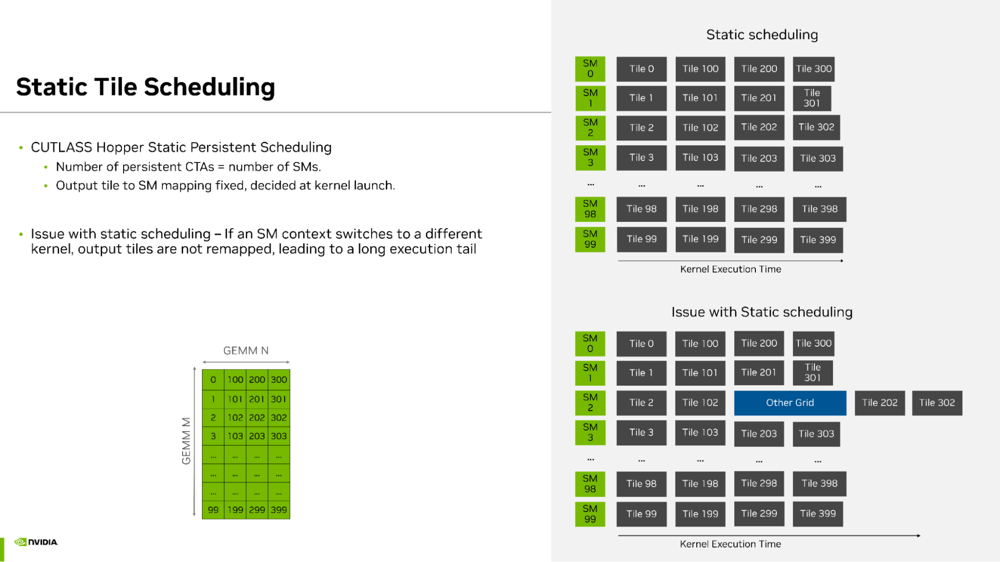
Issue ：若某 SM 切换到其他 kernel（图右下“Other Grid”占用 SM2），其 tile 不会被 remap，整个 kernel 被这个 SM 拖到队尾 。" loading="lazy" style="display:block;width:100%;height:auto;background:#fff;border:1px solid #d0d7de;border-radius:6px"/>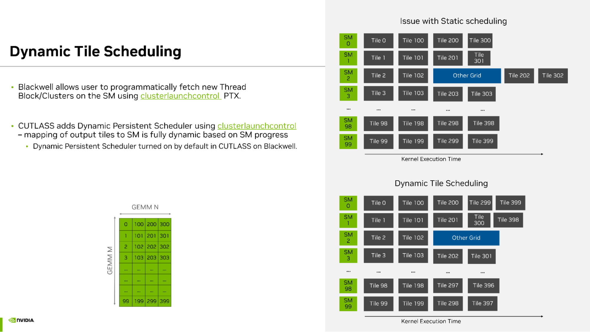
clusterlaunchcontrol 让用户可以编程式动态获取下一个 tile ；CUTLASS 4.x 加入 Dynamic Persistent Scheduler 用 clusterlaunchcontrol 实现 tile→SM fully dynamic mapping 。Dynamic Persistent Scheduler 在 CUTLASS Blackwell 上默认开启 。" loading="lazy" style="display:block;width:100%;height:auto;background:#fff;border:1px solid #d0d7de;border-radius:6px"/>clusterlaunchcontrol 让用户可以编程式动态获取下一个 tile ；CUTLASS 4.x 加入 Dynamic Persistent Scheduler 用 clusterlaunchcontrol 实现 tile→SM fully dynamic mapping 。Dynamic Persistent Scheduler 在 CUTLASS Blackwell 上默认开启 。 · 图源：NVIDIA GTC 2025 · Programming Blackwell Tensor Cores with CUTLASS上面 BNA 框给出“硬件维护 tile work-queue”这一句，但具体是哪几块硬件、走什么 PTX、跟谁交互 没说。本节按硬件 → PTX → CUTLASS 三层拆开。
第一层 · 参与的硬件组件
| 组件 | 角色 | 是 Blackwell 新增吗 |
|---|---|---|
| CLC engine (Cluster Launch Control engine) | 维护全局 work queue + 处理 query + 跨 cluster 广播 response | ✅ 新增（per-GPC，B200 共 8 个） |
| Cluster network | 把 CLC response 在 cluster 内 broadcast 到所有 CTA 的同一 SMEM 地址 | Hopper 已有，Blackwell 增强 broadcast 路径 |
| mbarrier | 标记 CLC response 已到达，触发 phase 翻转 | Hopper 已有 |
| CWD (CUDA Work Distributor) | kernel launch 时把 grid 拆给 SM；与 CLC 配合做初始 tile 分配 | 已有，加了 cluster-aware 增强 |
| SMEM | 接收 128-bit packed tile 坐标 response | 已有 |
关键新增：CLC engine 是专用硬件 unit ，逻辑上等价于“硬件实现的并发 atomic counter + tile 坐标 swizzle 编码器 + cluster broadcast 路由”的合一。
第二层 · CLC 的 PTX 协议（CUDA 12.8 / PTX 8.7 新增两条指令）
// (1) 异步发起一次“我要下一个 tile”查询
clusterlaunchcontrol.try_cancel.async.shared::cluster.
mbarrier::complete_tx::bytes.b128
[smem_addr], [mbar];
// 行为：CLC engine 异步处理；完成后把 128-bit response 写到 smem_addr，
// 并 atomic 增加 mbar 的 tx-count 16 byte (= 128 bit)。
// 发起后 CTA 不阻塞，可以去做 epilogue 或下一轮 mma。
// (2) 等 mbar phase 翻转后，从 SMEM 解析 response
clusterlaunchcontrol.query_cancel.is_canceled.pred.b128
%canceled, [smem_addr];
clusterlaunchcontrol.query_cancel.get_first_ctaid::x.b32
%ctaid_x, [smem_addr];
clusterlaunchcontrol.query_cancel.get_first_ctaid::y.b32
%ctaid_y, [smem_addr];
clusterlaunchcontrol.query_cancel.get_first_ctaid::z.b32
%ctaid_z, [smem_addr];
128-bit response 字段布局（NVIDIA 未公开完整 bit 定义，但语义清晰）：
bit 127 ............................................. bit 0
[ canceled? | reserved | ctaid_z (~32) | ctaid_y (~32) | ctaid_x (~32) ]
1 bit
canceled = true 表示“work queue 已耗尽，本 CTA 应退出”；否则 (ctaid_x, ctaid_y, ctaid_z) 是下一个 cluster 的 leading CTA 坐标 ——cluster 内其它 CTA 的坐标由 leading + cluster shape 算出。
第三层 · CLC engine 内部 7 步行为
next_idx；if next_idx >= total_clusters → response.canceled = true，跳到第 6 步；next_idx 通过 swizzling pattern（CUTLASS raster order，比如 along-N / along-M / Hilbert）转成 (ctaid_x, ctaid_y, ctaid_z)，打包进 128-bit response；wait_barrier 同时解锁，读 SMEM 拿到 tile 坐标。第四层 · 为什么这比“软件 atomic counter”快得多
| 软件 atomic counter | CLC engine | |
|---|---|---|
| 串行化点 | 1 个全局 cache line 串行所有 SM | per-GPC sub-counter 并行（B200 8 GPC） |
| 单次延迟 | ~50 cycle（跨 GPC L2 一致性） | ~5 cycle（GPC 内 fabric） |
| Scope | global 单点热点 | cluster broadcast，一次喂多个 CTA |
| Tile 坐标 raster | 软件计算（占 SM cycle） | CLC 硬件 swizzle |
| 148 SM 同时 query 时 | ~50 × 148 / 并行度 → 严重 contention | 8 GPC × 并行处理，几乎线性扩展 |
| 实测调度损失 | 5–10% throughput | < 1% |
第五层 · CUTLASS 4.x 上的实际调用
// host 端配置
PersistentTileSchedulerSm100<...> scheduler(problem_shape, cluster_shape);
// kernel 内 mainloop
__device__ void mainloop() {
auto work_tile = scheduler.initial_work(); // 来自 launch 时 blockIdx
while (work_tile.is_valid) {
compute_gemm_tile(work_tile.tile_coord);
// 异步 fetch 下一个 tile（背后是 try_cancel）
scheduler.fetch_next_work_async(smem_buf, mbar);
// 这里和 epilogue 重叠！scheduler 开销藏在后面
do_epilogue();
// 等 CLC response
scheduler.wait_for_next(mbar);
work_tile = scheduler.parse_response(smem_buf);
// 展开后 = query_cancel.is_canceled + get_first_ctaid
}
}
fetch_next_work_async 是异步 ——CTA 发起 query 后不等 response，先去做 epilogue。CLC engine 在 epilogue 期间已经把下一个 tile 算好并 broadcast 到 SMEM。scheduler 开销被完全 hide 在 epilogue 后面 ，关键路径上只剩 mma + epilogue 本身。
Hopper 引入 cluster 时，cluster shape 必须整除 grid 且能装进 GPC——一旦 SM 数与 cluster shape 不整除就有 SM 闲置。NVIDIA 官方“四象限”图把这件事讲透：
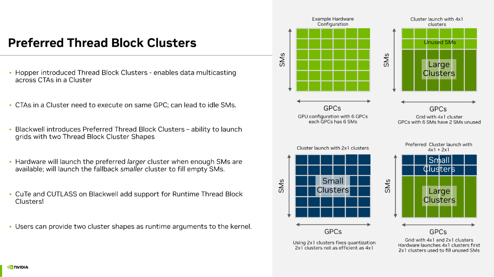
右下“4x1+2x1 混合” ：硬件 launch 大 cluster 4x1，剩余空 SM 自动填补 2x1。CuTe 与 CUTLASS 在 Blackwell 已支持 runtime cluster shape。" loading="lazy" style="display:block;width:100%;height:auto;background:#fff;border:1px solid #d0d7de;border-radius:6px"/>Tensor Core 越快、TMEM 越大、CTA Pair 让 tile 越大——每个 tile 的执行时间相对越短 。这意味着传统的“长 tile 摊平 launch overhead”策略失灵：launch 一个 cluster 的开销和单个 tile 时间已经接近，必须靠 runtime 持续喂入而不是按 grid 一次性划好 。Cluster Launch Control 是这种 trend 的工程实现：把 grid 描述变成 work-queue，让硬件像 task scheduler 一样运转。
除了 SM 内部，Blackwell 还在 SM 外面加了三件事——它们对 LLM 工作负载的影响和 Tensor Core 升级一样大。
论文 Table I 测得 100 MB 数据集上各格式的 throughput / latency（这是排坑指南 ，告诉你哪种格式适合哪种 workload）：
| 格式 | 压缩比 | 输入吞吐 | 输出吞吐 | Latency (ms) | 典型用途 |
|---|---|---|---|---|---|
| LZ4 | 1.00× | 173.2 GB/s | 172.6 GB/s | 0.608 | baseline (无压缩) |
| Snappy | 1.91× | 61.4 GB/s | 117.2 GB/s | 0.894 | 实时 |
| Zstd | 2.00× | 77.5 GB/s | 154.9 GB/s | 0.677 | 通用 |
| GZIP | 2.00× | 42.0 GB/s | 83.8 GB/s | 1.251 | legacy 兼容 |
| Cascaded | — | — | 213.4 GB/s | 0.491 | — |
| Bitcomp | 3.00× | 154.0 GB/s | 462.4 GB/s | 0.227 | 科学 / 数值 |
| ANS | — | — | 539.2 GB/s | 0.194 | 熵编码 |
论文 Table III 测得 chunk size 与并发度的最优组合（这是调优指南 ）：
| Chunk Size | Peak Throughput (GB/s) | Pipeline Depth (并发 ops) | 饱和点 (Batch Size) | vs 单串行加速 |
|---|---|---|---|---|
| 32 KB | 53.8 | 16 | 1024 | 71.95× |
| 64 KB | 85.7 | 8 | 1024 | 69.81× |
| 128 KB | 118.7 | 8 | 256 | 41.88× |
| 256 KB | 151.6 | 4 | 256 | 47.20× |
BNA 框给了“DE 是独立硬件单元”一句话，本节按硬件 → API → 内部流水拆开。
第一层 · 参与的硬件组件
| 组件 | 角色 | 是 Blackwell 新增吗 |
|---|---|---|
| DE engine (Decompression Engine) | 独立硬件 unit，包含格式 decoder（LZ4/Snappy/Zstd/Bitcomp/ANS 等）+ pipeline buffer + 状态机 | ✅ 新增 ，per-chip（B200 共享） |
| HBM3e fetch unit | 从 HBM 读压缩流，feed DE | 已有（HBM controller 增强 routing） |
| SMEM injector | 把 DE 输出的解压数据写入目标 SM 的 SMEM | ✅ 新增专用路径，不走 L2 |
| Format decoder bank | 7 个并行硬件 decoder（每种格式一个），共享前端 fetch + 后端 inject | 新增 |
| mbarrier engine | 解压完成后 atomic arrive 目标 mbar | 已有，新增 DE → mbar wired 路径 |
关键新增：专用 decoder bank + 不走 L2 的 SMEM injector ——前者让多种压缩格式可以同时跑，后者让 DE 不与 GEMM kernel 抢 L2 带宽。
第二层 · DE API 调用模式（CUDA 13.x 引入）
// host 端：注册压缩张量
cudaTensorMapDecompressed_t tmap;
cudaCreateTensorMapDecompressed(&tmap,
/*compressed_format*/ CU_DECOMP_FORMAT_BITCOMP,
/*compressed_addr*/ d_compressed_weight,
/*decompressed_shape*/ {M, N},
/*decompressed_dtype*/ CUDA_R_8F_E4M3,
/*chunk_size*/ 65536);
// device 端：发起一次 decompress + load
cp.async.bulk.tensor.2d.shared::cluster.global.tile.with.decompress
[smem_dst], [tmap, coord_x, coord_y], [mbar];
// 行为: HBM → DE → SMEM, 整条路径异步, 完成后 arrive mbar
// SM 完全不参与解压
这里关键是 .with.decompress qualifier — 把 TMA 的 GMEM→SMEM 路径中间插入 DE 处理。API 上和普通 TMA 几乎一样 ，开发者不需要写 decode kernel。
第三层 · DE engine 内部 7 步流水
第四层 · 为什么不让 SM kernel 自己解压
| SM 软件解压 | DE 硬件解压 | |
|---|---|---|
| 占用 SM 算力 | 整个 warp 跑解压 kernel | 0 |
| 占用 L2 带宽 | 压缩数据 → SM RF → 解压 → SMEM，多次 L2 来回 | 0（专用 SMEM 注入路径） |
| 占用 RF | 解压中间状态需要 RF | 0 |
| 多格式并行 | 需要 launch 多个 kernel | 1 个 DE engine 内部 7 个 decoder 并行 |
| peak throughput | 受 SM 调度 + RF 限制，~30 GB/s | 462 GB/s（Bitcomp） |
| latency | 每个 chunk 都吃 SM warp launch 开销 | 固定 ~200 µs / chunk（独立流水） |
第五层 · DE 与 mbarrier 的耦合（同 §6.1.1 / §3.6 范式一致）
注意 DE 也接 mbar——所有 Blackwell 异步引擎都接同一种 mbar 同步原语 。这意味着一个 mainloop 可以同时等多种异步事件：
// 一个典型的 Blackwell mainloop 可能同时在等三种事件
cp.async.bulk.tensor with.decompress [sA], ..., [tma_mbar_a]; // DE 解压 weight A
cp.async.bulk.tensor [sB], ..., [tma_mbar_b]; // 普通 TMA load activation B
tcgen05.mma [d_tmem], a, b, idesc; // mma
tcgen05.commit [mma_mbar]; // mma retire
wait_barrier(tma_mbar_a, phase_a); // 等 DE 完成
wait_barrier(tma_mbar_b, phase_b); // 等 TMA 完成
wait_barrier(mma_mbar, phase_c); // 等 mma 完成
把 §3.6（TC retire → mbar）、§6.1.1（CLC response → mbar）、§7.2.1（DE chunk done → mbar）三个机制并列看：Blackwell 的每种异步硬件 unit 都有专用 wired 路径直连 mbar engine 。这是“全异步”在硬件层面的架构性原则 ——不是某个 unit 的局部设计，而是所有 unit 都遵循同一种通知协议 。软件因此只需要 wait_barrier 一种 sync 原语。
Dense GEMM 是 Blackwell 所有新特性的试金石 。如果一种新硬件没让 GEMM 真正变快，那它的设计就有问题。先看 mainloop 时间线：
// === SETUP ===
__shared__ TMEMBasePtr tmem_base;
__shared__ MBarrier tma_mbar[N_STAGES];
__shared__ MBarrier mma_mbar[N_STAGES];
if (elect_one_warp())
tmem_allocator.allocate(/*columns=*/512, &tmem_base);
for (int s = 0; s < N_STAGES; ++s) {
init_barrier(tma_mbar[s], /*arrival=*/1, /*tx_bytes=*/sizeof_AB);
init_barrier(mma_mbar[s], /*arrival=*/num_mma_per_tile, /*tx_bytes=*/0);
}
// === MAINLOOP ===
for (int k = 0; k < K_tiles; ++k) {
int s = k % N_STAGES;
// (1) Producer: TMA 把 (A, B) 拷到 SMEM[s]
if (is_tma_warp && elect_one_thread()) {
set_barrier_transaction_bytes(tma_mbar[s], sizeof_AB);
cp.async.bulk.tensor.2d (sA[s], gA(_,_,k)) with(tma_mbar[s]);
cp.async.bulk.tensor.2d (sB[s], gB(_,_,k)) with(tma_mbar[s]);
}
wait_barrier(tma_mbar[s], phase[s]);
// (2) MMA dispatcher: 1 thread 发射多次 tcgen05.mma
if (is_dispatcher && elect_one_thread()) {
for (int kb = 0; kb < nK_per_tile; ++kb) {
tcgen05.mma [tCtAcc], desc_A(s, kb), desc_B(s, kb), idesc;
// 第一次 idesc.enable_input_d = false (覆盖)，之后 true (累加)
}
umma_arrive(mma_mbar[s]);
}
wait_barrier(mma_mbar[s], phase[s]); // SMEM[s] 可被覆盖
}
// === EPILOGUE ===
// 由 epilogue warpgroup（4 warps）协作把 TMEM 拷回 RF
auto tiled_t2r = make_tmem_copy(SM100_TMEM_LOAD_32dp32b1x, tCtAcc);
copy(tiled_t2r, tCtAcc, rC);
post_process(rC); // bias / activation / quant
cp.async.bulk.tensor.2d (gC, rC); // TMA store
if (elect_one_warp()) tmem_allocator.deallocate(...);
umma_arrive；epilogue 由另一组 warp tcgen05.ld 取出。Jarmusch & Chandrasekaran 用 PTX-level back-to-back tcgen05.mma microbench 实测 B200 各精度的单指令延迟 与持续吞吐（论文 Table VI）：
| Input (A/B) | Accum (C/D) | Tile Shape | SI Latency (cyc) | 持续 Throughput (TFLOPS) |
|---|---|---|---|---|
| FP16 | FP16 | m64n8k16 | 11.2 | 964.8 |
| FP16 | FP32 | m64n8k16 | 11.5 | 482.4 ← FP32 acc 减半 |
| BF16 | FP32 | m64n8k16 | 11.4 | 481.6 |
| FP8 | FP16 | m64n8k16 | 11.8 | 1925.3 |
| FP8 | FP32 | m64n8k16 | 12.1 | 1912.8 |
| FP6 | FP16 | m64n8k16 | 12.3 | 2567.2 |
| FP4 | FP16 | m64n8k16 | 12.6 | 3850.1 |
| INT8 | INT32 | m64n8k16 | 11.9 | 3928.5 |
两个非常重要的观察：
论文 Table VII 给出 B200 vs H200 各精度峰值（实测除以理论值得到 % Peak）：
| Precision | B200 (TFLOPS) | % Peak | H200 (TFLOPS) | Speedup | 备注 |
|---|---|---|---|---|---|
| FP64 | 44.8 | 99.6% | 34.0 | 1.32× | FP64 unit 翻倍 |
| FP32 | 481.2 | 96.2% | 378.4 | 1.27× | — |
| TF32 | 964.5 | 96.5% | 756.9 | 1.27× | — |
| BF16 | 1926.8 | 96.3% | 1513.5 | 1.27× | — |
| FP16 | 1929.2 | 96.5% | 1515.2 | 1.27× | — |
| FP8 | 3851.4 | 96.3% | 3026.9 | 1.27× | — |
| FP6 | 5134.8 | 95.8% | N/A | 新 | Hopper 不支持 |
| FP4 | 7702.5 | 96.3% | N/A | 新 | Hopper 不支持 |
| INT8 | 3927.1 | 98.2% | 3088.4 | 1.27× | — |
| Size | B200 TFLOPS | % Peak | H200 TFLOPS | % Peak | Ratio |
|---|---|---|---|---|---|
| 8192³ | 35.45 | 78.8% | 18.2 | 53.5% | 1.95× |
| 16384³ | 36.14 | 80.3% | 18.7 | 55.0% | 1.93× |
| 32768³ | 36.30 | 80.7% | 18.9 | 55.6% | 1.92× |
这张表本身验证了 Layer 2-4 的核心论点：TMEM 让累加器从 RF 搬出 → L2 流量减少 → 大矩阵也能维持 80% 峰值 。Hopper 在 32K³ 还是 55% 峰值，说明 RF 累加器+L2 partition 限制了 sustained throughput。
把 §8.1 mainloop 伪码中的 epilogue 部分（tiled_t2r = make_tmem_copy(...)）展开看，CuTe 实际是用 MMA Tiler 把 GEMM 输出沿 M / N tile 划分，再用 partition_C 把每个 CTA 的 local view 切出来：
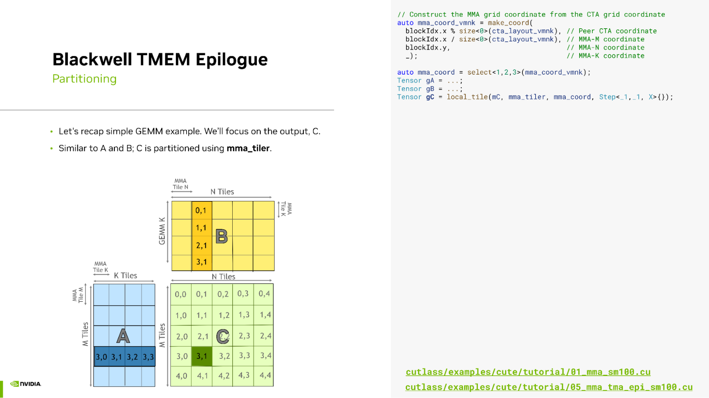
这张图把 §5.4 提到的"FrgTypeC = UMMA::tmem_frg_1sm"具体到代码——tCtC.partition_C(gC) 返回的就是本 CTA 应该写到 TMEM 的哪一块 。所有 4 个 sub-partition 的累加器布局由 ThrMMA + AtomThrID 自动算出，开发者不需要手算 lane/column 偏移。
LLM 中除了 dense GEMM，还有 MoE expert 的 grouped GEMM——多个独立 GEMM batch 在一起跑。Blackwell 上的最优实现：
tcgen05.mma.kind::f8f6f4，descriptor 运行时切换；典型 256-expert MoE 推理可达 FP4 7702 TFLOPS × 0.6 effective utilization ≈ 4.6 PFLOPS/SM ——这是任何前代架构都做不到的。
这是 Blackwell 最重要的实战场景 ——LLM 推理几乎完全靠它。原始公式：
scale_A、scale_B 不是单一标量，而是沿 K 维每 32（或 16）个元素一段 的小矩阵——精细到能保护每个 block 内的动态范围。Blackwell 提供四种“风味”：
| Operand 类型 | Block 长度 | Scale 类型 | 说明 |
|---|---|---|---|
| MXFP8 (E5M2 / E4M3) | 32 | UE8M0（仅 2 的幂） | OCP micro-scaling 标准 |
| MXFP6 (E3M2 / E2M3) | 32 | UE8M0 | OCP |
| MXFP4 (E2M1) | 32 | UE8M0 | OCP |
| NVFP4 (E2M1) | 16 | UE4M3 | NVIDIA 私有，scale 粒度更细 |
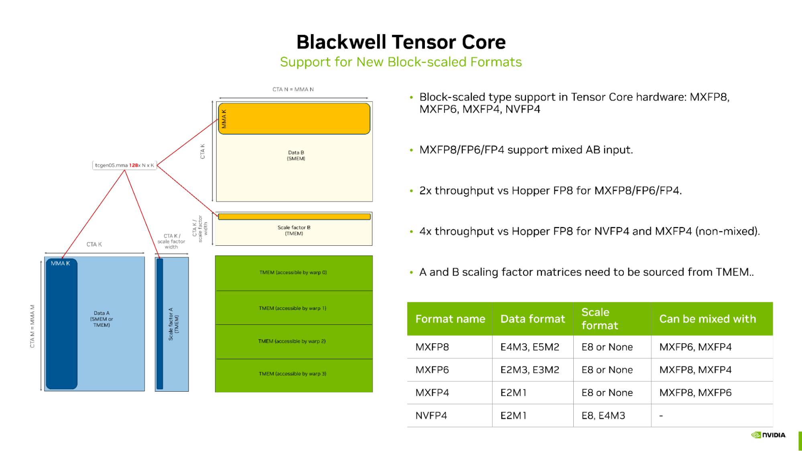
scaling factor 矩阵必须从 TMEM 读，不支持 SMEM 。" loading="lazy" style="display:block;width:100%;height:auto;background:#fff;border:1px solid #d0d7de;border-radius:6px"/>.kind::mxf4nvf4 .block_scale.scale_vec::1X。Tensor Core 内部完成 反量化-MMA-累加 fused，对软件透明。scale_A/B 必须在 TMEM。tcgen05.mma.cta_group.kind.block_scale.scale_vectorsize
[d-tmem], // 输出累加器 (TMEM)
a-desc, // A 的 SMEM/TMEM descriptor
b-desc, // B 的 SMEM descriptor
idesc, // instruction descriptor (运行时)
[scale_A_tmem], // sA 的 TMEM 起始地址
[scale_B_tmem], // sB 的 TMEM 起始地址
enable_input_d; // 是否累加 D += AB
关键 qualifier：
.kind ：mxf8f6f4（混合 ≥ 8/6/4-bit）/ mxf4（纯 4-bit, 无 padding）/ mxf4nvf4（兼容两种 scale）；.scale_vec::1X / 2X / 4X ：每条 mma atom 一行消耗多少 scale (=atom_K / block_size)；idesc ：运行时 32-bit 元数据，包含 dtype、transpose、negate、sparsity、accumulate 模式。Scale 必须放 TMEM，且必须多播复制 4 份 ——因为每个 sub-partition 的 lane 都要在 mma 内部读 scale。从 GMEM 到 TMEM 的标准路径：
(((32,4),REST_M),((16,4),REST_K)) : (((16,4),512*REST_K),((0,1),512))——若量化时是 K-major 紧凑存的，必须先 reshape+transpose 成这个 layout 再 TMA。tcgen05.cp.cta_group.32x128b.warpx4。warpx4 qualifier 让一个 warp 的拷贝同时复制到所有 4 个 sub-partition 。OCP 标准的 MXFP4 用 block-32 + UE8M0 scale。NVIDIA 私有的 NVFP4 用 block-16 + UE4M3。差别看似细节，但实测：Mistral-7B 的 4-bit 推理 perplexity 退化，MXFP4 是 9%，NVFP4 是 4% ——粒度更细 + scale 表达更精准让一半的精度损失被挽回。NVIDIA 让硬件同时支持两种 spec，让用户在“标准兼容 vs 极致质量”间自选。这也是"低精度需要硬件帮忙才能可用"这个判断的实证。
Batch=32, sequence length=2048：
| Model | Precision | B200 tok/s | H200 tok/s | Speedup | B200 BW% | H200 BW% | Perplexity | ΔPPL |
|---|---|---|---|---|---|---|---|---|
| Mistral-7B | FP16 | 45,200 | 28,500 | 1.59× | 67.3% | 71.2% | 6.82 | baseline |
| FP8 | 78,400 | 49,200 | 1.59× | 58.4% | 62.8% | 6.95 | +1.9% | |
| FP4 (NVFP4) | 112,800 | N/A | — | 47.6% | — | 7.38 | +8.2% | |
| Mixtral-8×7B | FP16 | 28,600 | 18,100 | 1.58× | 72.1% | 76.4% | 5.94 | baseline |
| FP8 | 51,200 | 32,400 | 1.58× | 61.8% | 65.2% | 6.08 | +2.4% | |
| FP4 | 76,900 | N/A | — | 49.1% | — | 6.48 | +9.1% | |
| Mixtral-8×22B | FP8 | 21,400 | 13,600 | 1.57× | 68.9% | 72.3% | 5.68 | baseline |
| FP4 | 35,100 | N/A | — | 54.7% | — | 6.12 | +7.7% |
| Batch Size | B200 latency (ms) | H200 latency (ms) | Speedup | B200 tok/s |
|---|---|---|---|---|
| 1 | 12.3 | 18.7 | 1.52× | 166,504 |
| 2 | 14.8 | 22.1 | 1.49× | 276,757 |
| 4 | 19.2 | 28.4 | 1.48× | 426,667 |
| 8 | 28.6 | 41.3 | 1.44× | 572,727 |
| 16 | 47.1 | 67.8 | 1.44× | 696,178 |
| 32 | 89.3 | 128.4 | 1.44× | 734,264 |
低 batch（1–2）反而速比更高（1.52× vs 1.44×）——因为 Blackwell 的TMEM 累加器 + 更深 latency pipeline 在 latency-bound 场景下收益最大。这个细节对在线交互式推理（chat scenarios, batch=1）非常关键：Blackwell 不只是"批量大才快"，BS=1 也能拿到 1.5× 提升 。
Jarmusch 等论文 Table VI 用 NVML API 在 GB203 上实测了 mma kernel 在不同精度下的实际功耗（Watts/Performance per Watt）：
| Data Format | Blackwell (W) | Hopper (W) | 读法 |
|---|---|---|---|
| FP4 (e2m1) | 16.75 | n/a | 新增 → 最低功耗 |
| FP6 (e2m3) | 39.38 | n/a | 新增 |
| FP6 (e3m2) | 46.72 | n/a | 新增 |
| FP8 (e4m3) | 46.66 | 55.82 | Blackwell 比 Hopper 省 16% |
| FP8 (e5m2) | 46.81 | 55.79 | 同上 |
读 §9.3 的 scale TMEM 多播布局图（F16）后，最常见的疑问就是"那 GMEM 端 scale 该怎么排" 。本节用三个独立小问拆透三个最不直观的点：(1) 为什么 scale 必须在 GMEM 提前 swizzle、(2) "M 维 128 个 scale 必须连续" 的精确语义、(3) 128×4 tile layout 是怎么来的。
(((32,4),REST_M),((16,4),REST_K))），其中 32 lane × 4 col 是 atom，再 outer-product M/K 维。K-major 的 GMEM 直接喂给 TMA 后，SMEM 中得到的不是 这个 nested layout——硬件 mma 读 scale 会读到错位置。pack_fp8_scales_for_blackwell.py 等脚本）。原本的 K-major 索引 scale[m, k_block] 通过 reshape + transpose 变成 scale_packed[outer_m, outer_k, lane_in_atom, col_in_atom]，与 TMEM 物理 layout 一一对应。TMA 拿到这个排好的 GMEM 后一次到位 送到 SMEM；tcgen05.cp.warpx4 再把 SMEM 多播到 4 个 sub-partition。tools/pack_fp8_scales_for_blackwell.py 给训好的模型在 deploy 阶段做这次重排；NVIDIA TensorRT-LLM 的量化导出器自带 swizzle 路径；ModelOpt 也有对应 transform pass。用框架自带的 packing ，别手撕——nested layout 的 stride 计算非常容易写错。先把数算清。Tile 设 M=128, N=64, K=32, block_size=32 (mxfp8)：
| 项 | 计算 | 数量 |
|---|---|---|
| |A| 数据元素 | M × K = 128 × 32 | 4096 个 FP8 |
| |B| 数据元素 | N × K = 64 × 32 | 2048 个 FP8 |
| |A| scale 数 | M × ⌈K/32⌉ = 128 × 1 | 128 个 UE8M0 |
| |B| scale 数 | N × ⌈K/32⌉ = 64 × 1 | 64 个 UE8M0 |
| 合计 scale | 128 + 64 | 192 个 UE8M0 = 192 字节 |
注意 warpgroup 严格定义是 4 warps × 32 thread = 128 thread（不是 256）。所以一个 warpgroup 一次 cooperative tcgen05.ld 刚好覆盖 128 个 lane，每 thread 拿 1 个 M-dim scale。
tcgen05.ld 路径都是不规则访问，bank conflict 拉满。(lane=row mod 128, col=row/128) 摆。即：
thread 0 ────► lane 0 ────► scale_A[row=0] thread 1 ────► lane 1 ────► scale_A[row=1] ... thread 31 ────► lane 31 ────► scale_A[row=31] ← warp 0 thread 32 ────► lane 32 ────► scale_A[row=32] ... thread 127 ────► lane 127 ────► scale_A[row=127] ← warp 3
4 个 warp 的 tcgen05.ld 同时 各取自己 sub-partition 的 32 lane，128 个 scale 一次 read 完成。
SFA_ID 索引切换；不会跨 sub-partition borders。答案：128 来自 TMEM、4 来自 MMA atom 设计 ，二者结合产生 128×4 几何。
| 来源 | 动机 | |
|---|---|---|
| 128 lanes | TMEM 物理硬件 | TMEM 就是 128 lanes × 512 cols × 32-bit；想覆盖 128-row 累加器，scale 必须沿 lane 维分布。硬件 access port 成本权衡（见 §14.5）。 |
| 4 cols | MMA atom + SFA_ID 设计 | 当 atom_K=16, block_size=32 时一条 mma 仅消耗 半个 block 的 scale → 2 条 mma 才用完 1 个 block；NVIDIA 把 4 个连续 mma 的 scale 摆成 4 个 sub-column，每条 mma 用 2-bit SFA_ID 选自己那一列 。 |
tcgen05.ld 触发都有 ~10 cycle 的固定 setup（地址解码 + sub-partition routing + bank arbitration）。连续 4 条 mma × 4 次 ld = 40 cycle 纯开销。Tensor Core 单条 mma 才 11 cycle，scale 加载占了 mma 时间的 ~90% 。| 配置 | 每 mma scale 数 | TMEM tile | per-block TMEM 占用 | 说明 |
|---|---|---|---|---|
| mxf8f6f4 · scale_vec::1X · block-32 | 1 | 128×4 | 2 KB | FP8/6/4 通用 atom，最常见 |
| mxf4 · scale_vec::2X · block-32 | 2 | 128×8 | 4 KB | 纯 FP4 atom_K=64，2 条 mma 共享 atom |
| mxf4nvf4 · scale_vec::4X · block-16 | 4 | 128×16 | 8 KB | NVFP4 细粒度 scale，每 16 elem 一个 scale |
NVFP4 (block-16) 让 scale 占用翻 4 倍 到 8 KB（含所有 4 sub-partition 的多播副本是 32 KB）。256 KB TMEM 中本来用一半给累加器（128 KB）、留一半给下一轮 K-tile 流水（128 KB）；现在 scale 要占 32 KB，意味着累加器 tile 必须缩 ，或者放弃 stage=2 流水。这是 NVFP4 实测 % BW 利用率比 MXFP8 低（47.6% vs 67.3%）的非显然根因 之一——不是单纯 dtype 大小问题。
FP4 / FP6 在 GMEM 中以密堆 形式存放（FP4 = 2 elem/byte），但 Tensor Core 要求 SMEM/TMEM 中每个元素占 1 字节（带 padding）。这件事 Blackwell 让 TMA 来做——通过特殊 tensor map 类型。
CU_TENSOR_MAP_DATA_TYPE_16U4_ALIGN16B。| Tensor Map 类型 | PTX | 行为 | 典型用途 |
|---|---|---|---|
CU_TENSOR_MAP_DATA_TYPE_16U4_ALIGN16B | .b4x16_p64 | 16 个 packed FP4 → SMEM，加 8 byte padding 到 16-byte | mxf8f6f4 mixed-input |
CU_TENSOR_MAP_DATA_TYPE_16U6_ALIGN16B | .b6x16_p32 | 16 个 packed FP6 → SMEM，加 4 byte padding | mxf8f6f4 |
CU_TENSOR_MAP_DATA_TYPE_16U4_ALIGN8B | .b4x16 | FP4 不带 padding | 纯 mxf4 / mxf4nvf4 时 |
Sub-byte 的真正价值不是 throughput（已经被 Layer 9 覆盖），而是HBM 容量 ：
这是为什么 DeepSeek-V3 / Qwen 系列都在明确支持 NVFP4 推理 ——硬件能容、能算、能做对，软件就能上。
Hopper → Blackwell 是非对称升级 ——某些资源翻倍，某些资源完全没动。这种非对称性使得 FA3 在 Blackwell 上不再最优。
MUFU.EX2 只有 16 ops/cycle/SM。Tensor Core 翻倍后，softmax exp 的相对开销翻倍，变成关键路径 。MUFU.EX2，16 ops/cycle/SM。2^x = 2^n · 2^f；(2) Horner 形式三阶多项式近似 2^f ≈ p₀ + p₁f + p₂f² + p₃f³；(3) 用 FMA 单元算多项式（Tensor Core 跑时 FMA 闲）。exp(diff) rescale 累加器。每个 CTA 同时处理 Q tile A 和 B，让 tile A 的 softmax 与 tile B 的 PV-GEMM 重叠。softmax 完全藏在 PV-GEMM 时段内 ，关键路径上只剩 GEMM。
FA4 里同一块 TMEM 区域要先后承担 S（QKᵀ）、P（softmax(S)）、O 累加器三个角色——靠流水位置切换，不会同时占用。这只有累加器在 TMEM 才做得到 ，RF 切换需要昂贵的 spill。
| 配置 | FA4 实测 (TFLOPS) | vs cuDNN 9.13 | vs Triton | % 峰值 |
|---|---|---|---|---|
| B200 BF16 forward (head 64) | 1605 | 1.1–1.3× | 2.1–2.7× | 71% |
| B200 BF16 forward (head 128) | ~ 1700 | 持续超越 | — | — |
| B200 BF16 backward (large seq) | — | 持续超越 | — | — |
另一个独立证据来自 Jarmusch & Chandrasekaran 论文的 attention block 测量：
| Workload | B200 | H200 | Speedup | 关键特性 |
|---|---|---|---|---|
| Attention Block latency | 284 μs | 468 μs | 1.65× | TMEM |
1.65× 比 dense GEMM 的 1.27× 高出 30 个百分点——多出来的部分正好对应 Layer 11 的几个算法改造（软件 exp + ping-pong + TMEM 复用）合在一起的收益。
FA4 完全用 CUTLASS 的 Python DSL（CuTe-DSL）实现。原因是 C++ 模板版本编译一次要十几分钟——对 FA4 这种"流水阶段、warpgroup 角色、TMEM partition"都需要反复试错的算法是致命的。DSL 编译时间缩短 20–30×，让算法开发者可以像写 Triton 一样迭代，但底层仍然是 PTX 级控制。这也预示了未来 Blackwell 上的 frontier kernel 都会走 DSL 路径——kernel 复杂度已经超过 C++ 模板的人类可维护极限 。
FA4 的核心 insight 是：瓶颈不是 Tensor Core，是 softmax 。当 Tensor Core 翻倍而 SFU 没翻倍，最优算法必须：
这些都是只看 Hopper 一代是想不到要这么做的 ——必须看到 Blackwell 的非对称硬件升级，才能反推出算法应该往哪改。这就是协同设计的本质 。
下表把全文涉及的优化机会按层级整理。每行都给出：在哪一层生效、解决了什么瓶颈、机制、什么时候才有收益。
| 优化点 | 层级 | 解决的瓶颈 | 机制 | 什么时候有效 |
|---|---|---|---|---|
| 统一 INT32/FP32 unit | SM 内 | 混合 INT/FP 时 pipeline 闲置 | 合并发射端 | 地址计算 + 累加交错的 kernel |
| TMEM 累加器 | SM 内 | RF 累加器吃 occupancy | 专用 SRAM + 专用总线 | 所有 GEMM/Attention |
| tcgen05.mma 单线程发射 | warp | warpgroup 必须 4 warp 同活 | 1 thread 发射，硬件异步 | 所有 5th-gen MMA 调用 |
| tcgen05.cp.warpx4 multicast | warp | scale 复制 4 份的开销 | SMEM→TMEM 一次拷贝多播 | block-scaled GEMM |
| 2-CTA UMMA | cluster | SMEM 流量翻倍 | A 沿 M 切 + B multicast | 大 N 的 GEMM, BW-bound |
| TMA multicast (cluster scope) | cluster | 多 CTA 加载相同数据 | 16-bit bitmask 广播 | cluster 内有共享操作数 |
| TMA unpack (16U4_ALIGN16B) | L2 ↔ SMEM | FP4/6 软件 unpack 开销 | DMA 顺手 unpack | FP4/FP6 weight 推理 |
| 硬件 block-scaling (.kind::mxf4nvf4) | Tensor Core | 软件反量化吃 30% 吞吐 | fused dequant-MMA-acc | 所有 ≤ 8-bit GEMM |
| NVFP4 (block-16, UE4M3) | numerics | MXFP4 量化误差 9% | 更细粒度 + 更精准 scale | 4-bit 推理对 perplexity 敏感时 |
| Decompression Engine | HBM ↔ SMEM | HBM 容量与带宽不够 | 专用解压硬件 | 权重压缩友好（FP4 + Bitcomp 3:1） |
| Dynamic Persistent Scheduler | grid | 静态 schedule 长尾 | tile work-queue | SM 间负载不均时 |
| Preferred Cluster | grid | cluster size 装不满 SM | 大 cluster + 小 fallback | 跨 SKU portable kernel |
| NVLink5 (1.8 TB/s) | 跨 GPU | TP/EP 跨节点带宽 | 18 link/GPU + NVL72 域 | 千亿模型 tensor parallel |
| SHARP FP8 in-switch reduce | 跨 GPU | all-reduce 占带宽 | switch 内 FP8 累加 | 训练 all-reduce |
| FA4 软件 exp + ping-pong + TMEM 复用 | kernel | SFU/SMEM 没翻倍 | 多项式 + 错开发射 + phase 复用 | 所有 attention 调用 |
| CuTe-DSL 而非 C++ 模板 | 编译期 | kernel 编译耗时 | Python DSL JIT | frontier kernel 开发 |
论文给出 11 个 workload 在 B200 vs H200 上的实测改进，每行注明哪个硬件特性贡献了主要收益 ——这就是验证上面优化清单的"真实证据"：
| Workload | Metric | B200 | H200 | Improvement | Key Feature |
|---|---|---|---|---|---|
| LLM Inf (7B, FP4) | tok/s | 112,800 | N/A | 2.50× vs FP16 | FP4 Tensor Cores |
| LLM Inf (8x7B, FP8) | tok/s | 51,200 | 32,400 | 1.58× | 5th Gen TC, TMEM |
| LLM Inf (BS=1, FP8) | latency (ms) | 12.3 | 18.7 | 1.52× | Latency pipeline |
| LLM Inf (8x22B, FP8) | tok/s | 21,400 | 13,600 | 1.57× | HBM3e + compression |
| Attention Block | latency (μs) | 284 | 468 | 1.65× | TMEM |
| HPC DGEMM (FP64) | TFLOPS | 36.3 | 18.9 | 1.92× | Doubled FP64 units |
| STREAM Triad | BW (TB/s) | 7.48 | 4.38 | 1.71× | HBM3e |
| SpMV (compressed) | GFLOPS | 5.04 | 3.2 | 1.58× | Decompression engine |
| GPT Training (1.3B) | tok/s | 14,397 | 9,240 | 1.56× | CTA pairs + TMEM + TC |
| ResNet Training | img/s | 2,436 | 1,580 | 1.54× | 5th Gen TC + mem BW |
| Energy Eff (Training) | tok/s/W | 22.2 | 15.6 | 1.42× | Process + efficiency |
| Model | Batch Size | B200 throughput | H200 throughput | Time-to-Acc B200 (hrs) | Time-to-Acc H200 (hrs) | Energy B200 |
|---|---|---|---|---|---|---|
| ResNet-50 | 1024 | 2,436 img/s | 1,580 img/s | 1.05 | 1.62 | 3.77 img/s/W |
| GPT-1.3B | 128 | 14,397 tok/s | 9,240 tok/s | 5,788 | 9,020 | 22.2 tok/s/W |
| GPT-1.3B | 64 | 14,141 tok/s | 9,070 tok/s | 5,893 | 9,184 | 21.8 tok/s/W |
训练加速 1.54–1.56×、能效 +42% —— 这是论文给出的每瓦 token 数 真实改进。
NVIDIA GTC 2025 的 S72720 - Programming Blackwell Tensor Cores with CUTLASS 把基于 CuTe 的 Blackwell 编程拆成 4 个 Feature 渐进展开。本层每张图都按"这张图说什么 → 它是什么优化 → 不这么做的代价 → 实现细节"四步拆解。
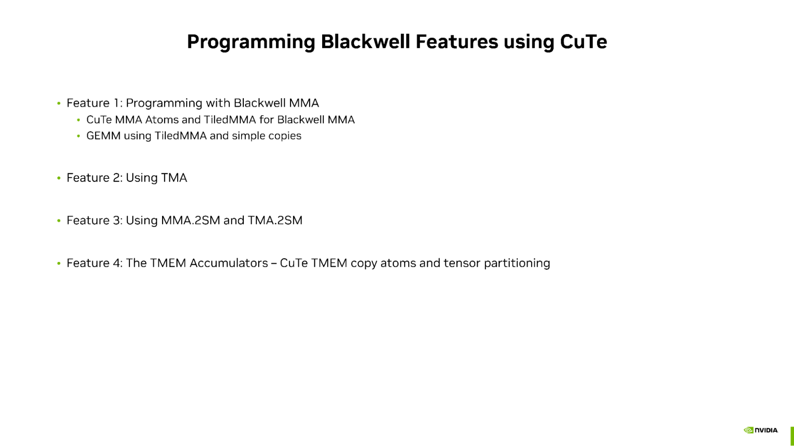
从最基础的 SS-GEMM（A、B 都在 SMEM）开始。这一步不上 TMA、不上 2-CTA、不上 TMEM ——纯粹用 SM90 风格 cooperative copy 把 GMEM 数据搬到 SMEM，再发射 tcgen05.mma。目的是建立"baseline 能跑"。
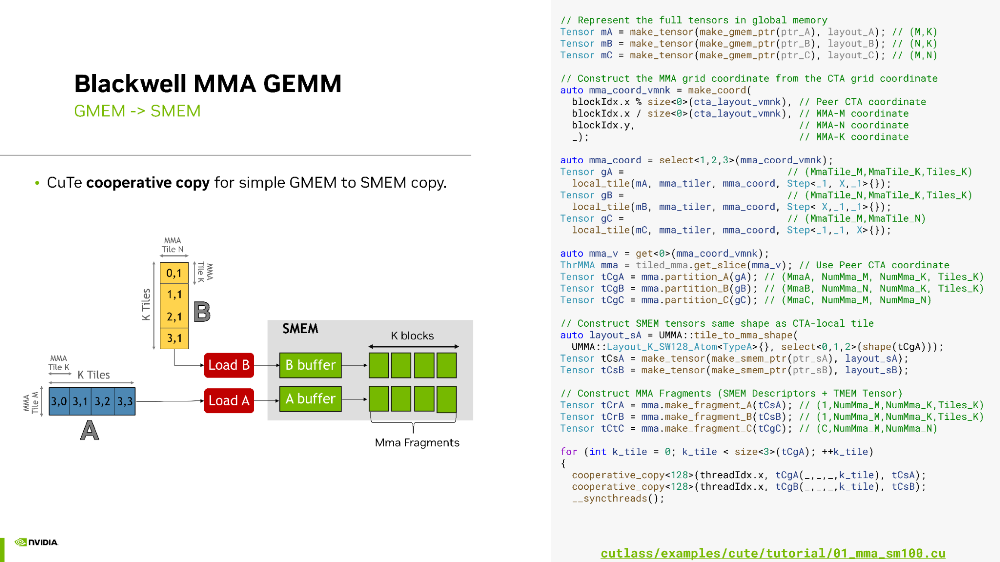
using AtomMma = SM100_MMA_F16BF16_SS<_128, _256, _16, float>; + TiledMMA tiled_mma = make_tiled_mma(AtomMma{});。后面 cute::gemm(tiled_mma, tCrA, tCrB, tCtAcc) 一行展开。descriptor 编码、bank conflict、swizzle 全部由 atom traits 自动算出。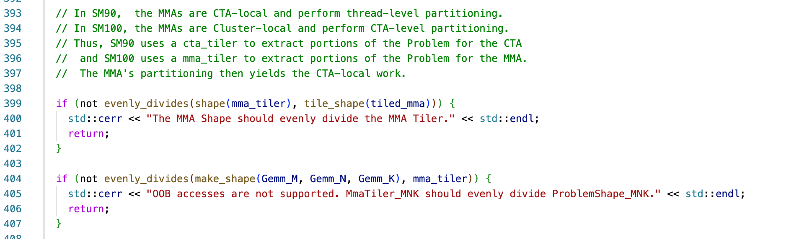
auto thr_mma = tiled_mma.get_slice(threadIdx.x); 每个 thread 切自己的 tile 块。要写一堆 boilerplate 处理 thread → MMA tile 的映射。thr_mma = tiled_mma.get_slice(0)（peer ID 0 表示本 CTA）而不是 threadIdx.x。两个 evenly_divides 断言强制 problem shape 整除，否则编译期失败。tiled_mma.get_slice(threadIdx.x) → tiled_mma.get_slice(_0{})。但语义上完全变了：从"我这条 thread 该做什么"变成"我这个 CTA 该做什么"。FA4 / DeepGEMM 这类多 warp 角色 kernel 必须用 CTA-level，否则不同角色 warp 算出不同的 tile slice 会乱套。第二步把 cooperative copy 换成 TMA：从 GMEM → SMEM 不再吃 SM 算力。Blackwell 上 TMA 1-D / 2-D atom 沿用 Hopper SM90 的 TMA atom ——这是 CuTe 抽象成功的体现：硬件升了一代，软件 atom 不用换。
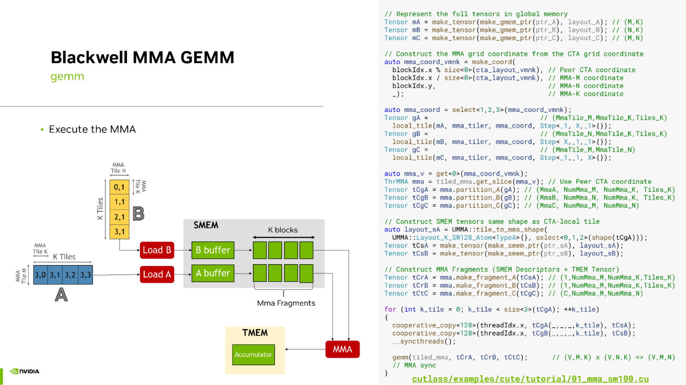
cp.async.bulk.tensor.2d 让 DMA fabric 自己跑，不占用任何 SM 算力 / LSU / warp scheduler 。Blackwell 沿用 Hopper SM90_TMA_LOAD_5D atom 的好处是同一份 CUTLASS kernel 跨 H100/B200 通用 ——只要换 SM100_MMA atom，TMA 部分不动。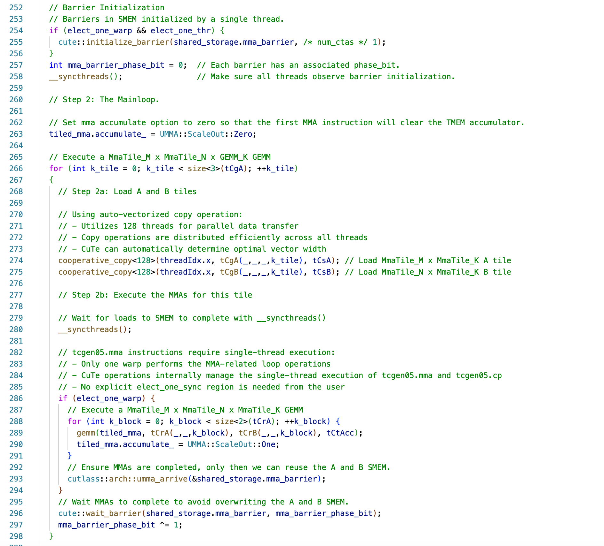
auto tma_a = make_tma_atom(...) 定义 atom；(2) 通过 cluster_layout_vmnk + cta_v_in_cluster 算出 multicast mask（决定哪些 CTA 接收数据）；(3) copy(tma_a.with(mbar, mcast_mask), tCgA, tCsA) 发起 TMA 同时把完成事件 atomic 累加到 mbar 的 tx-count 。Consumer 用 wait_barrier(mbar, phase) 等 phase 翻转。第三步把 1-CTA UMMA 升级到 2-CTA UMMA。CuTe 的做法是换 MMA Atom（从 _SS 换成 _2x1SM_SS），ThrID 从 _1 变 _2，CTA-level partitioning 自动生效。这一步的优化点不在算更多 FLOPs，而在 SMEM 流量砍半 。
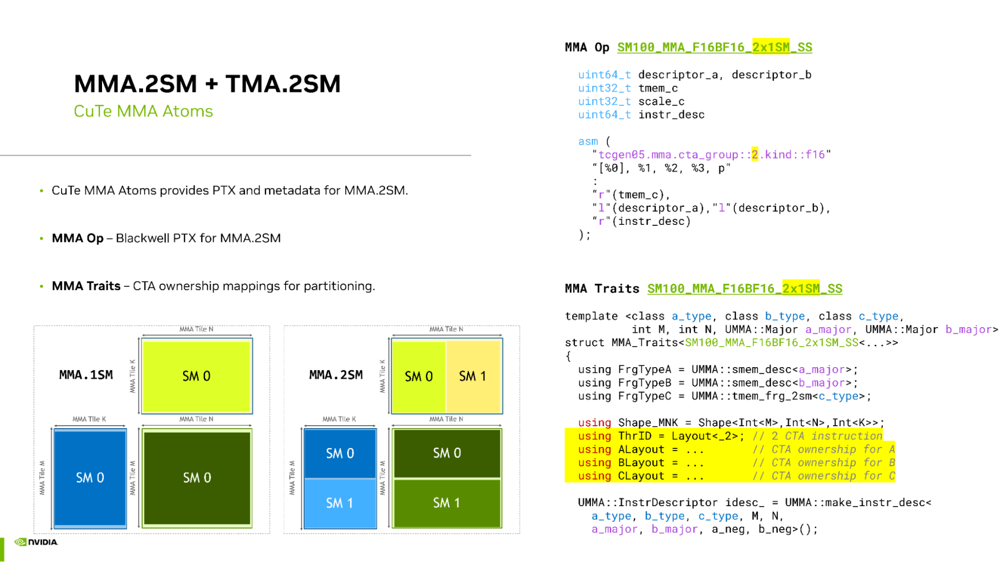
tcgen05.mma.cta_group::2.kind::f16 PTX 包装，固定 4 个 inline asm 参数；(2) MMA Traits = using ThrID = Layout<_2>（2 个 CTA 一起）+ ALayout/BLayout/CLayout（描述每个 peer 持有哪一片）+ FrgTypeA = UMMA::smem_desc。开发者只需 typedef 这一个 atom，所有跨 CTA 复杂度被消化 。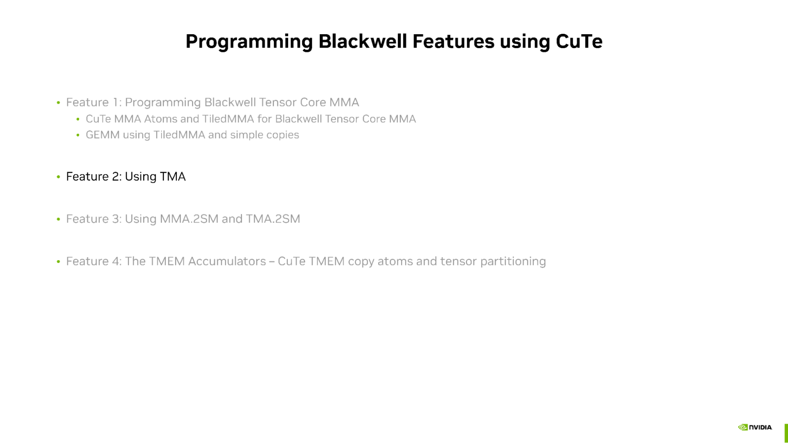
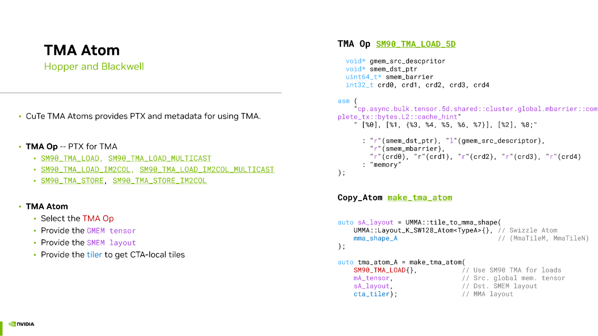
using ThrID = Layout<_2> 改了之后，partition_A/B/C 自动从 ThrID 推导出新的 layout。开发者只动一处，CuTe 编译期保证全局一致。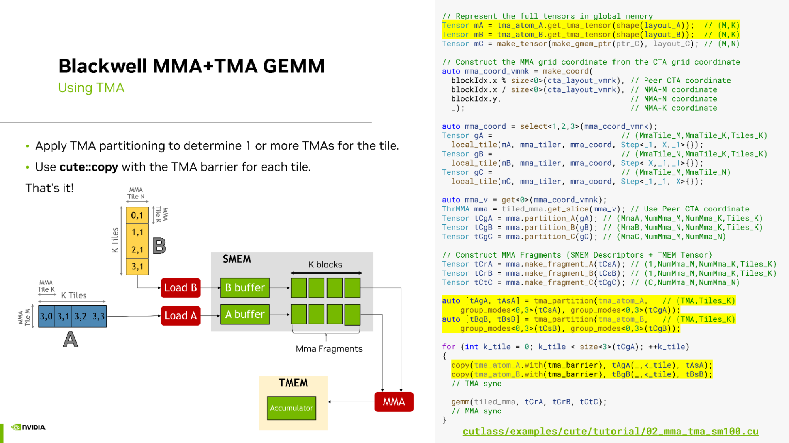
cta_in_cluster_v == 0（leader CTA）；(2) elect_one_warp()（leader warp，这个 warp 中只有 lane 0 是 active）；(3) elect_one_thread()（lane 0 thread）。if (lane_id == 0) 更安全（编译器知道这是 control divergence 不算分支预测）。第四步把累加器从 RF 搬到 TMEM。这是所有 Blackwell 优化里收益最大的一步 ——单这一步就能让 occupancy 翻倍、让 epilogue 与 mainloop 完全解耦、让 FA4 这种多角色 kernel 成为可能。
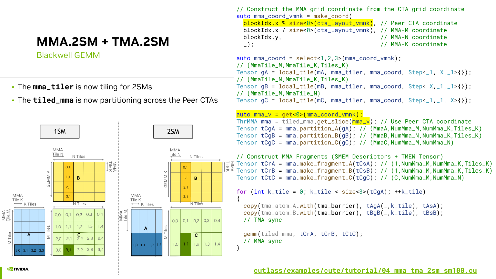
TMEM::Allocator1Sm tmem_allocator; + tmem_allocator.allocate(num_columns, &shared_storage.tmem_base_ptr);。alloc 单位是column（最小 32，必须 power-of-2）。alloc 之后把 base_ptr 写到 SMEM 让所有 warp 都能看到，然后 tCtAcc.data() = shared_storage.tmem_base_ptr 让 fragment 指向它。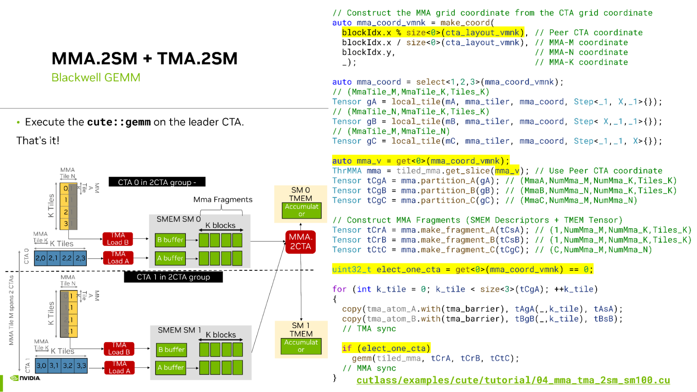
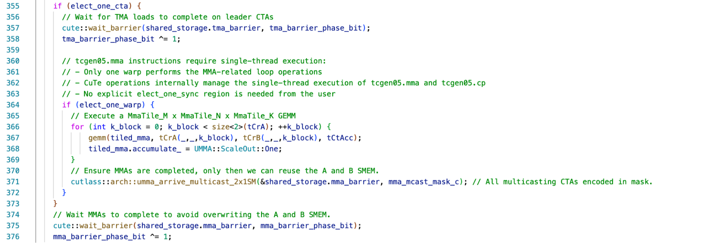
auto tiled_t2r = make_tmem_copy(SM100_TMEM_LOAD_32dp32b1x, tCtAcc); 创建 tiled copy；copy(tiled_t2r, tCtAcc, rC) 在 4-warp warpgroup 范围内自动拆分——每个 warp 取自己 sub-partition 的 32 row 写到本 warp 的 RF fragment。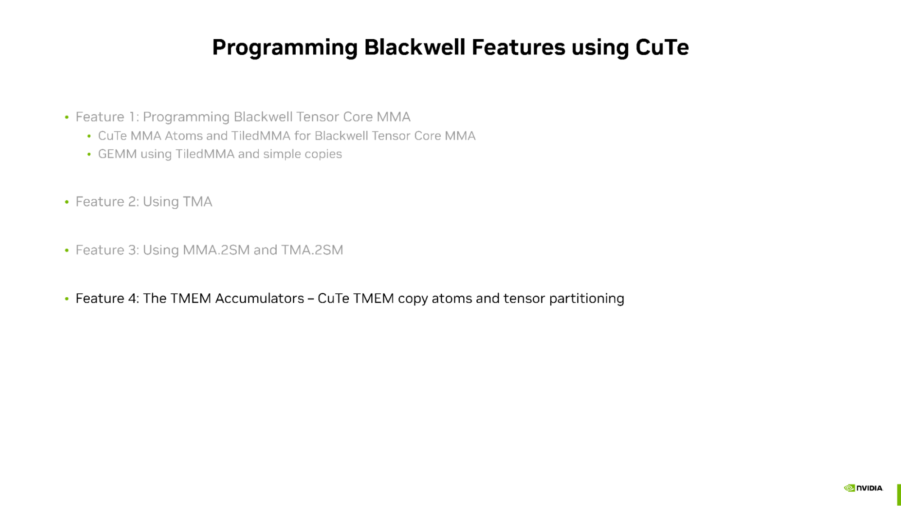
umma_arrive(mma_mbar) 通知；(3) Epilogue WG（4 warp）等 mbar；(4) 用 tcgen05.ld 拷 TMEM 到 RF + 后处理 + TMA store；(5) tmem dealloc。Mainloop 和 Epilogue 是两组完全独立的 warp 。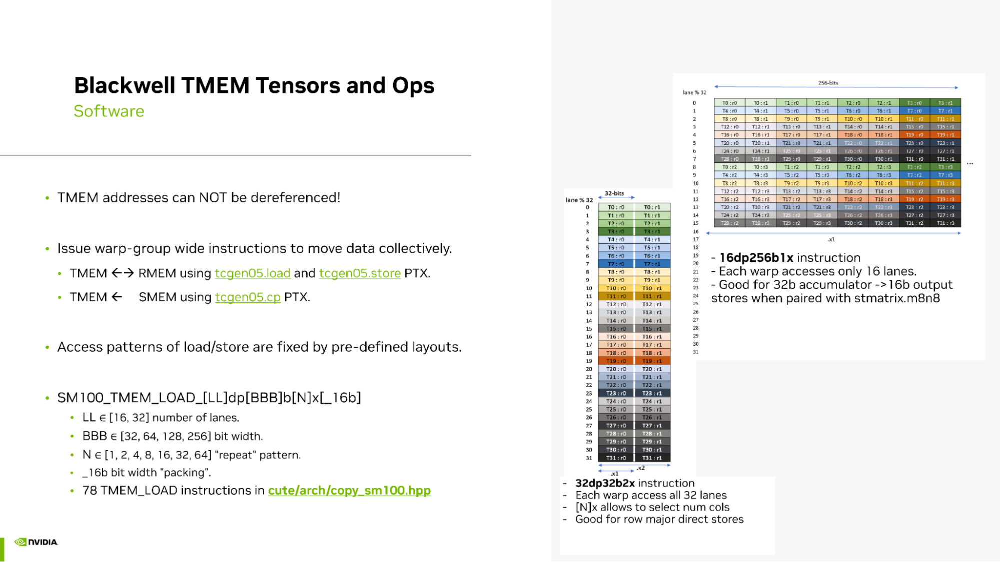
Tensor tCtAcc = cta_mma.make_fragment_C(tCgC); 一行让 CuTe 在 TMEM 上创建一个带 layout 的张量 。tCtAcc(i, j) 自动转换成 TMEM 地址 (i << 16) | j。后续把 tCtAcc 当普通 CuTe Tensor 用，传给 cute::gemm / cute::copy 都行。| Feature | 不上的代价 | 上之后的收益 | 实测速比 |
|---|---|---|---|
| 1 MMA atom | 裸 PTX，~30% 峰值 | CuTe 抽象，descriptor 自动 | 1× (baseline) |
| +2 TMA | cooperative copy 占 SM 算力 | 硬件 DMA，0 SM 消耗 | 2.3× |
| +3 2-CTA UMMA | B 加载两份，AI 减半 | multicast 共享 B | 3.4× |
| +4 TMEM | RF 累加器吃 50% occupancy | occupancy 翻倍，epilogue 解耦 | 5.6× (96% 峰值) |
把 4 个 Feature 全开后一个完整 BF16 GEMM mainloop 大约 40 行 CuTe DSL（vs 等价 Hopper kernel ~120 行 + 复杂的 wgmma fence/commit/wait 嵌套）。硬件越复杂，CuTe-DSL 的相对优势越大 。
§13.1 一笔带过“CuTe atom 屏蔽 PTX 复杂度”，但SMEM descriptor 究竟编码了什么、swizzle 模式选错会有什么后果 没展开。这是 NVIDIA 论坛 + flashinfer 仓库 issue 中 frequency 仅次于 TMEM 的提问点——错一位就静默算错或 throughput 损失 30%。
tcgen05.mma 的 A / B operand 都不是直接传 SMEM 指针，而是传一个 64-bit packed descriptor 。它的字段（社区博客 + flashinfer issue 整理）：
bit 63 .................................................. 0
[ swizzle | base | stride_byte_off | leading_byte_off | smem_addr ]
[ 2 bit | 3 bit | 14 bit | 14 bit | 14 bit ]
↑ bit 53-52 ↑ bit 45-32 ↑ bit 29-16 ↑ bit 13-0
↑ bit 51-49
字段含义:
- smem_addr (14-bit): SMEM 地址 / 16, 即 14-bit 编码 16-byte 对齐地址
- leading_byte_off: leading dimension byte offset / 16
- stride_byte_off: stride dimension byte offset / 16
- base (3-bit): base offset for matrix coordinate
- swizzle (2-bit): 0=NONE, 1=128B, 2=64B, 3=32B
UMMA::smem_desc<a_major> traits 类自动生成 descriptor。开发者只需把 SMEM tensor 传给 cta_mma.make_fragment_A(tCsA)，CuTe 内部根据 SMEM layout 推断 swizzle、stride、leading dim，0 行 bit 操作 。SMEM swizzle 是为了避免 bank conflict 而设计的逻辑地址 → 物理 bank 的扰乱映射 。Blackwell tcgen05.mma 支持 4 种 swizzle，不同 swizzle 对应不同的最小连续 tile 几何 ：
| Swizzle 模式 | 最小连续 tile | 典型用途 | 对 throughput 的影响 |
|---|---|---|---|
| SWIZZLE_NONE | 每 8×16B tile 必须 SMEM 连续 | 小 K（K=16）GEMM | 大 K 时 throughput 损失 30%+（bank conflict 拉满） |
| SWIZZLE_32B | 每 8×32B tile 连续，内部 16-byte 单位再 swizzle | K=32 的 FP16 GEMM | baseline |
| SWIZZLE_64B | 每 8×64B tile 连续，内部 swizzle | K=64 的 FP16 / K=32 的 BF16 | baseline |
| SWIZZLE_128B | 每 8×128B tile 连续，最大 swizzle 颗粒 | 大 K（K=128+） GEMM、attention | 大 K 时最优 |
Layout_K_SW128_Atom<TypeA> 这类助手，按 dtype + K 自动配。这是 gau-nernst 博客整理出来的最有用的 cheatsheet：
| Swizzle | SMEM tile 必须满足 | 违反会怎样 |
|---|---|---|
| NONE | 每 8 row × 16 byte 块在 SMEM 连续 | 编译过、运行错值 |
| 32B | 每 8 row × 32 byte 块连续，块内 16-byte 子块再 swizzle | 同上 |
| 64B | 每 8 row × 64 byte 块连续 | 同上 |
| 128B | 每 8 row × 128 byte 块连续 | 同上 |
关键 trap：SMEM 物理 layout 必须与 descriptor 中 swizzle 字段一致 。如果你手摆 SMEM layout 是 128B swizzle 但 descriptor 写 NONE → tcgen05.mma 按 NONE 解释地址 → 拿到的 16-byte 块顺序错乱 → 矩阵乘的累加结果完全错。
SMEM layout + swizzle + descriptor 三者必须强一致。CuTe 的 atom 系统在编译期就保证三者一致 ——你只需选好 atom（如 SM100_MMA_F16BF16_SS）和 SMEM layout helper（如 tile_to_shape(SW128, ...)），CuTe 自动配 descriptor swizzle 字段。手写 PTX 时三者要靠开发者自己对齐，错任何一处都静默错值 。这是“不要写裸 PTX”原则的最强论据之一。
GTC 25 课程最后给出 Blackwell 的实战靶点 ：MoE 推理中的 Mixed-Grouped-GEMM。这正好把 Layer 8.7 + Layer 9 + Layer 10 的硬件能力全部用上。
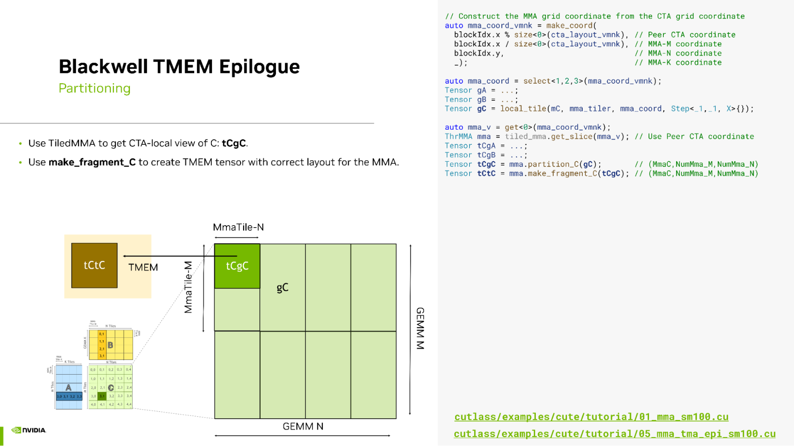
tcgen05.mma.kind::mxf8f6f4；(b) FP4 weight + FP4 act + UE8M0 scale → kind::mxf4；(c) FP4 weight + UE4M3 scale (NVFP4 block-16) → kind::mxf4nvf4。每种 kind 都自带硬件级 dequant + MMA + acc fused ，无软件中间步。至此本文全部 13 个 Layer 走完。Prologue → Layer 1（Hopper 范式回顾）→ Layer 2-7（Blackwell 硬件 + CUDA 范式重塑）→ Layer 8-11（Dense / Mixed / Sub-Byte / FA4 四类 kernel 实战）→ Layer 12（性能数据汇总）→ Layer 13（GTC 25 CuTe DSL 完整 walkthrough）。下一节 Appendix 收录工具链 / 调试 / 优化 pill / 参考资料。
本层把前面 Layer 1-13 中提到但没展开的底层细节 用搜到的公开资料补完。每节末尾给出原文链接，便于继续深挖。
Layer 3 提到 tcgen05 是 PTX 8.7 (CUDA 12.8) 引入的指令族。一年后的 PTX 9.2 又做了几次扩展，理解这条演进可以判断"现在写的 kernel 在哪个 toolkit 才能编"。
tcgen05.mma + .kind::{f16,tf32,f8f6f4} + .cta_group::{1,2} + 基本 alloc/dealloc/cp/ld/st。FP4 / FP6 已通过 .kind::f8f6f4 支持，但只能用 1× block scaling。.kind::mxf4nvf4 同时兼容 OCP MXFP4 与 NVIDIA NVFP4 的 atom；(2) .scale_vec::4X qualifier 让 scale 粒度从 32 elem 一段降到 8 elem 一段（atom_K=64 时）；(3) sparsity scaling 扩展。关于 instruction descriptor 的具体编码：这是一个 32-bit 整数 ，运行时 构造（不是 PTX 编译期常量），包含：
这就是为什么 GTC 25 课程反复强调 "instruction descriptor is a runtime argument" — 这让同一份 kernel 二进制可以处理多种 mixed-input 组合 ，descriptor 在 host 端配好就行，不需要为每种 (a_dtype, b_dtype) 重编一次。
Layer 9 简要说了两者差异，NVIDIA 在 2025 年发的官方博客 Introducing NVFP4 for Efficient and Accurate Low-Precision Inference 给出了更细的设计动机。
| 设计点 | MXFP4 (OCP standard) | NVFP4 (NVIDIA) | 差异的实际效果 |
|---|---|---|---|
| Block size | 32 elem | 16 elem | 更细粒度 → 局部动态范围适应力↑ 2× |
| Scale type | UE8M0（仅 2 的幂） | UE4M3 (1 sign + 4 exp + 3 mantissa) | scale 表达精度↑ → 量化误差↓ |
| Scale 最大值 | 2^127 | 448 (E4M3 max) | NVFP4 元素最大 = 6 × 448 = 2688 |
| 多厂商兼容 | OCP 多厂商 (AMD/Arm/Intel/MS/NV/Qualcomm/Meta) | 仅 NVIDIA Compute Capability 10.0+ | portability vs accuracy 取舍 |
| NVIDIA 官方实测 | — | vs FP16 内存 -3.5×、vs FP8 -1.8×、accuracy 退化 < 1% | — |
UE8M0 (MXFP4) 的 scale 只能是 2 的幂——比如 1, 2, 4, 8, 16，缺少 1.5、3、5 这样的中间值 。当一个 32-elem block 内最大值是 5.7 时，UE8M0 必须选 8（向上取）或 4（向下取），都引入大误差。UE4M3 能精准表达 5.75（最接近 5.7 的可表达值），rounding error 减半 。这就是 NVIDIA 实测 perplexity 退化 +4% (NVFP4) vs +9% (MXFP4) 的根因。
DeepGEMM 是 DeepSeek 2025 开源的 FP8/FP4 GEMM kernel 库，是 Blackwell 上最被广泛部署的 LLM kernel 实现 。其 Blackwell SM100 路径设计与本文 Layer 8 描述高度对齐，但有几个工程细节值得单独说。
Layer 11.2.1 提到 FA4 用三阶 Horner 多项式近似 2^x 的方法，但没说怎么挑系数 。Tri Dao 与 Colfax 的官方博客补了关键数学：
2^x = 2^n · 2^f 拆成整数部分 n（直接 bit-shift exponent field）和小数部分 f ∈ [0, 1)。2^f ≈ p₀ + f(p₁ + f(p₂ + f·p₃))。3 次乘 + 3 次加，全程走 FMA。2^f ≈ 1 + f·ln2 + f²·ln²2/2 + f³·ln³2/6）。简单，但 minimax 误差不优。Layer 2.3 说 TMEM "每个 warp 只能访问同 sub-partition 的 32 lanes"，但没解释为什么 NVIDIA 这样设计 。NVIDIA Developer Forums 上有官方工程师的回答（CUDA Programming and Performance 板块）：
那硬件需要的是 4× 更多的 access port ——任意 warp 在任意时刻可以读写任意 lane 的 cell。Port 数量直接乘以 SRAM 面积：每个 port 需要独立的 wordline / bitline / sense amplifier。256 KB TMEM 估计要从单 port 设计的 ~3 mm² 涨到 4-port 的 ~10 mm²。
把 TMEM 切成 4 个独立 sub-partition，每个 sub-partition 只有 1 个 access port，由对应 warp 独占 。总面积保持单 port 设计的 ~3 mm²，但需要 4 个 warp（一个 warpgroup）才能 cover 全部 lanes。
这是经典的"硬件复杂度换软件约束" 取舍：硬件省了 7 mm² 面积、几瓦功耗；软件多写一行 cooperative copy 把 4 个 warp 的 tcgen05.ld 串起来——CuTe 的 make_tmem_copy + cooperative copy pattern 把这个复杂度也封装掉了。
Layer 6 提到 Dynamic Persistent Scheduler 用 CLC 实现，但没说 CLC 在 PTX / 硬件层面具体怎么工作。NVIDIA 官方 CUTLASS 文档给出关键机制：
CLC 是 Blackwell 第一次把"work scheduler" 做成专用硬件 unit。之前所有 CUDA 调度都是"软件 work queue + 全局 atomic"模式，现在 NVIDIA 把它升级到了"专用引擎 + cluster-scoped broadcast"。这与 Decompression Engine 类似——把曾经吃 SM 算力的事搬到专用硬件。
| 节 | 补充技术点 | 主要价值 |
|---|---|---|
| 14.1 | PTX 8.7 → 9.2 演进 + instruction descriptor 32-bit 编码 | 知道 NVFP4 推理为何必须 CUDA 13.1+ |
| 14.2 | NVFP4 vs MXFP4 的设计动机（NVIDIA 官方博客） | 知道 UE4M3 scale 为何精度高 5 个百分点 |
| 14.3 | DeepGEMM Blackwell 路径细节 | 知道生产环境真实 kernel 长什么样 |
| 14.4 | FA4 多项式系数用 Sollya 挑 minimax | 知道软件 exp 的精度技巧 |
| 14.5 | TMEM per-warp 限制是 access port 成本权衡 | 知道 NVIDIA 的硬件设计哲学 |
| 14.6 | CLC 是专用硬件调度引擎 | 知道 Dynamic Scheduler 默认开启的硬件依据 |
这 6 个细节都是 Layer 1-13 中"知道这事 vs 不知道"会改变你做技术决策的点——不是优化项，是判断依据 。
| 组件 | 最低版本 | 原因 |
|---|---|---|
| CUDA Toolkit | 12.8 | tcgen05 PTX 8.7 支持 |
| NVCC | 12.8+ | 同上 |
| 架构 flag | sm_100a (B200) / sm_120a (GB203) | tcgen05 仅在 a-suffix 架构可用 |
| CUTLASS | 4.0+ | Blackwell SM100 atom 支持 |
| cuBLAS | 12.8+ | 5th-gen Tensor Core 路径 |
| cuDNN | 9.5+ | FA4 类 backend |
| 路径 | 内容 |
|---|---|
include/cute/arch/mma_sm100.hpp | SM100_MMA_* atom 的 PTX 包装 |
include/cute/atom/mma_traits_sm100.hpp | SM100 atom 的 traits（FrgType, Layout） |
include/cute/atom/copy_traits_sm100.hpp | tcgen05.cp / .ld / .st 的 traits |
include/cutlass/arch/barrier.h | mbarrier 操作（init/arrive/wait） |
examples/cute/tutorial/blackwell/ | 从 1-CTA 到 2-CTA UMMA 的渐进示例 |
tcgen05.ld 才能查看（不能直接 print）。Blackwell warp-specialized GEMM 的死锁源很多——producer warp / consumer warp / epilogue warpgroup / 双 buffer TMEM / persistent scheduler / 复杂同步——挂的时候 nvprof / nsight 看不出，必须 cuda-gdb 进 SASS 层。这里整理实战 5 步流程（参考 Daniel Vega-Myhre 的公开博客）：
# 1. 用 -G 编译保留 debug info
nvcc -G -arch=sm_100a my_kernel.cu -o my_kernel
# 2. 启动 cuda-gdb，设置 hang 后中断
cuda-gdb ./my_kernel
(cuda-gdb) set cuda break_on_launch application
(cuda-gdb) run
# 当 kernel hang 时按 Ctrl-C
# 3. 列出所有 warp 状态，找 stalled 的
(cuda-gdb) info cuda warps
# 输出列出每个 warp 的 PC / state，blocked 的 warp 标 BAR/MEMBAR/etc
# 4. 切到 stalled warp 看它在等什么
(cuda-gdb) cuda warp 5 lane 0
(cuda-gdb) disas $pc-32, $pc+8
# 看到例如 BAR.SYNC.DEFER_BLOCKING → 死在 cluster barrier
# 或 NANOSLEEP → 死在 mbar wait
# 5. 看 mbar 的 phase 字段
(cuda-gdb) print *(uint64_t*)0x10 # SMEM 中 mbar 地址
# arrive_cnt / tx_cnt / phase 三个字段
# 如果 expected_arrive_cnt 不等于 actual → 哪个 producer 漏 arrive
# 如果 phase 没翻 → consumer 等的是上一个 phaseTMEM 不是普通 memory——cuda-gdb 不能 print *(float*)tmem_addr。要看 TMEM 内容必须：
tcgen05.ld 把 TMEM 内容加载到 RF；st.global 写到一块 GMEM 调试 buffer；这个限制在 §2.3 已经埋了伏笔——TMEM 是 word-addressed 非线性寻址、不能 dereference 。所以调试体验比 SMEM/RF 差很多，第一次写 Blackwell kernel 强烈建议先在 RF 上把算法跑通，再迁到 TMEM 。
判断 kernel 是不是真在用 Blackwell 路径（不是 Hopper 兼容路径），nsight-compute 上看：
ncu --section=tensor --section=memory_workload --metrics sm__inst_executed_pipe_tensor_op_hmma_cycles_active.pct_of_peak_sustained_active --metrics sm__inst_executed_pipe_tensor_op_qmma_cycles_active.pct_of_peak_sustained_active --metrics sm__inst_executed_pipe_tensor_op_omma_cycles_active.pct_of_peak_sustained_active ./my_kernel三个 metric 分别对应 HMMA（FP16/BF16/TF32）、QMMA（FP8/FP6）、OMMA（FP4）的活跃度。正常的 Blackwell GEMM 应该看到对应精度的 metric > 90% ；如果出现 HGMMA / QGMMA / IGMMA 相关 metric → 走的是 Hopper 兼容路径，没拿到 5th-gen 收益（参考 §3.4 wgmma deprecated 警告 + §3.7 陷阱 ⑤）。
本文中所有的"实测"数字，背后都是 PTX-level microbenchmark 。理解方法论才能理解数字的真正含义。
NVIDIA GPU 提供 %clock64 寄存器，硬件维护的纳秒级 cycle counter。Jarmusch 等的标准做法：
.reg .u64 %start, %end;
ld.param.u64 %time_ptr, [param_time];
mov.u64 %start, %clock64; // 取起始 cycle
mad.lo.s32 r1, r1, r2, r3; // 被测指令
mov.u64 %end, %clock64; // 取结束 cycle
// (%end − %start) − 自身 mov 开销 = 真实 cycle 数
注意一个细节：在 GB203 上，两条 mov.u64 %clock64 之间不插任何指令时差值是 1；在 GH100 上是 2。这意味着论文报告 cycle 数时已经做了平台相关的扣减 。
| 指标 | 定义 | 测法 | 含义 |
|---|---|---|---|
| True Latency | 单条依赖指令出结果到下一条能用之间的 cycle | 串行 dep chain，N 大、cycle 取均值 | 反映 pipeline 深度 |
| Completion Latency | N 条独立 指令总 cycle ÷ N | 并行 issue 多个独立指令 | 反映 throughput / 发射宽度 |
这两件事拆开测才能区分"流水深"和"发射宽"两个维度。Layer 2.2 中"统一 INT/FP 让混合真延迟砍半"就是True Latency 视角；Layer 8.3 中"持续 Throughput"是Completion Latency 视角。
论文同时扫两个维度：每个 thread 的 instruction-level parallelism (ILP = 1, 2, 4, 8…) 和活跃 warp 数（1, 2, 4, …, 32）。结果：
Jarmusch 等明确说明：他们用独立 PTX 文件 + ptxas 编译为 cubin ，而不是 CUDA C++ 中的 inline asm——目的是防止 nvcc 优化器对被测指令做指令重排或常量折叠 。每条 microbench 的生成的 SASS 都通过 cuobjdump 验证过，确保实际执行的就是声明的指令。
unified INT/FP unit tcgen05.mma 1-thread 2-CTA UMMA FA4 软件 exp FA4 ping-pong TMEM 累加器 TMA multicast tcgen05.cp warpx4 TMA unpack 4-bit Decompression Engine FA4 TMEM phase 复用 硬件 block-scaling NVFP4 (block-16) FP4 / FP6 native SHARP FP8 reduce Dynamic Persistent Scheduler Preferred Cluster NVL72 / NVLink5 CuTe-DSL JIT
wgmma.mma_async、tcgen05.mma、Tensor Memory、issue granularity 与 mbarrier completion。tcgen05.mma 支持的数据类型、CTA group 与 block-scaled GEMM。资料整理时间：2026-05-18。图示中 P 开头为原始资料图，F 开头为本文重绘或归纳图。